Capítulo 8. Análise
Modelos rigorosos de arquiteturas de software apresentam várias vantagens em relação a diagramas informais de caixas e linhas. Eles forçam o arquiteto de software a resolver questões que poderiam passar despercebidas ou ignorar. Eles permitem uma comunicação mais precisa entre os diversos stakeholders do sistema e formam um plano sólido para a construção, implantação, execução e evolução do sistema. E normalmente apresentam mais detalhes sobre a arquitetura do que modelos informais, para que mais perguntas possam ser feitas e respondidas com mais precisão embora certamente existam momentos em que compreensão suficiente sobre certos aspectos de um sistema possa ser obtida mesmo a partir de modelos informais.
Definição. A análise arquitetônica é a atividade de
descobrir propriedades importantes do sistema usando os modelos arquitetônicos
do sistema.
Obter respostas precoces e úteis sobre aspectos relevantes da arquitetura do sistema pode ajudar a identificar decisões de projeto inadequadas ou incorretas antes que sejam propagadas ao sistema, reduzindo assim o risco de falhas no sistema e no projeto. É importante que um arquiteto de software, assim como outros stakeholders do sistema, saibam quais perguntas fazer sobre a arquitetura e por quê, como fazê-las e como garantir que elas possam ser respondidas extrapolando e interpretando as informações necessárias capturadas no modelo da arquitetura.
Todos os modelos não serão igualmente eficazes para ajudar a determinar se uma determinada arquitetura satisfaz um determinado requisito. Por exemplo, considere o diagrama que representa a arquitetura do módulo lunar emFigura 8-1, inicialmente introduzido emCapítulo 6. Esse diagrama pode ajudar o arquiteto a obter esclarecimentos dos clientes do sistema e vice-versa; Também pode ser analisado (informalmente) por um gerente para garantir que o escopo do projeto seja apropriado. Ao mesmo tempo, um modelo tão inicial e informal nem sempre será útil para se comunicar com, e dentro deles, as equipes de desenvolvimento do sistema. O modelo, por exemplo, não ajuda a responder perguntas como exatamente como os componentes (ou seja, as caixas do modelo) interagem, onde eles são implantados em relação entre si e qual é a natureza de suas interações (isto é, as linhas do modelo).
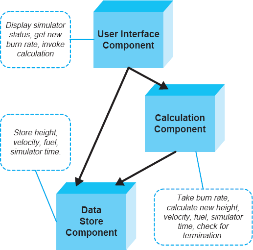
Figura 8-1. Um diagrama que representa informalmente a arquitetura do Lunar Lander usando o Microsoft PowerPoint.
Por outro lado, um modelo arquitetônico mais formal do sistema pode definir precisamente interfaces de componentes, as condições sob as quais invocar uma dada interface é legal, o comportamento interno de um componente, suas interações externas legais e assim por diante. Tal modelo da arquitetura do módulo lunar foi apresentado emCapítulo 6; ela é mostrada novamente emFigura 8-2. Esse modelo pode ser analisado para várias propriedades. Por exemplo, o modelo pode ajudar a garantir a componente-compoabilidade no sistema da maneira especificada pela configuração arquitetônica. Após essa análise ser concluída com sucesso, os componentes individuais podem ser atribuídos aos desenvolvedores para implementação. Em alguns casos, modelos individuais de componentes podem ser usados em análises posteriores para descobrir componentes existentes que correspondem de perto a serem retirados da prateleira e reutilizados no novo sistema. Outra alternativa seria analisar o modelo de componentes por meio de uma ferramenta automatizada de geração de código cuja saída seria a implementação do componente em uma determinada linguagem de programação.
Ao mesmo tempo, um modelo tão rico pode não ser o meio mais eficaz para responder perguntas sobre o escopo do projeto ou sobre o cumprimento dos requisitos-chave pelo sistema resultante. Essas questões podem ser respondidas de forma mais eficaz pelos stakeholders menos técnicos do sistema, como gerentes e clientes, por meio de análises informais, talvez manuais, de modelos menos rigorosos e detalhados.
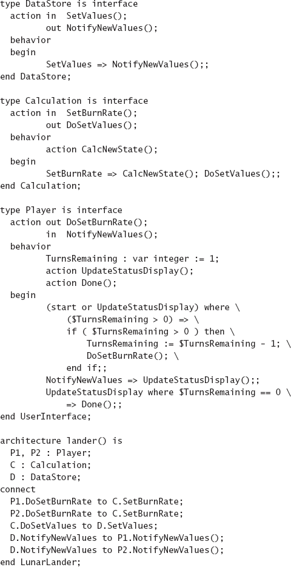
Figura 8-2. Um modelo parcial e formal da arquitetura do módulo lunar correspondente ao diagrama da Figura 8-1. A arquitetura é modelada usando a Rapide ADL.
Também é crucial reconhecer que analisar uma arquitetura de software não tem os mesmos objetivos e não lida com as mesmas questões que analisar programas de software. Os arquitetos terão que determinar quais problemas identificados em suas arquiteturas são críticos e quais não são. Alguns problemas descobertos por análise podem ser aceitáveis se o sistema ainda estiver passando por projeto arquitetônico, por exemplo, se certas partes da arquitetura ainda estiverem ausentes.
Outra dimensão desse problema é induzida pela reutilização pronta de funcionalidades já existentes. Em uma teoria ingênua, os desenvolvedores de software devem buscar alcançar correspondências perfeitas entre os componentes de seu sistema: cada serviço fornecido por um determinado componente será necessário por um ou mais componentes do sistema, e cada serviço exigido por um determinado componente será fornecido por outro componente do sistema. Em outras palavras, não há nenhuma funcionalidade desnecessária fornecida no sistema, nem falta qualquer funcionalidade necessária no sistema. Sistemas desenvolvidos dessa forma são mais simples e conceitualmente mais limpos. No entanto, isso não funciona na maioria dos grandes sistemas de software, para os quais o desenvolvimento baseado em arquitetura é orientado. A maioria desses sistemas envolve a reutilização de funcionalidades prontas a usar, além do design e implementação de componentes extensíveis que serão utilizáveis em múltiplos sistemas. Portanto, certos descompassos entre os componentes de uma determinada arquitetura podem ser não apenas aceitáveis, mas também desejáveis nesse contexto mais amplo.
O objetivo deste capítulo é apresentar e relacionar diferentes facetas da análise arquitetônica. Para isso, este capítulo organiza a discussão em torno de oito dimensões relevantes para a análise arquitetônica:
O capítulo desenvolve cada uma das sete dimensões e discute como elas se relacionam e às vezes se restringem.
Resumo deCapítulo 8
OBJETIVOS DA ANÁLISE
Assim como na análise de qualquer artefato de software, a análise de modelos arquitetônicos pode ter objetivos variados. Esses objetivos podem incluir a estimativa antecipada do tamanho, complexidade e custo do sistema; adesão ao modelo arquitetônico às diretrizes e restrições de projeto; Satisfação dos requisitos do sistema, tanto funcionais quanto não funcionais (vejaCapítulo 12); avaliação da correção do sistema implementado em relação à sua arquitetura documentada; avaliação das oportunidades para reutilizar funcionalidades existentes ao implementar partes do sistema modelado; e assim por diante. Categorizamos esses objetivos de análise arquitetônica em quatro categorias, conforme discutido abaixo. Chamamos esses como os quatroCs da análise arquitetônica.
Completude
A completude é um objetivo tanto externo quanto interno. É externo em relação aos requisitos do sistema. O principal objetivo de avaliar a completude de uma arquitetura nesse contexto é estabelecer se ela captura adequadamente todos os principais requisitos funcionais e não funcionais de um sistema. Analisar um modelo arquitetônico para verificar a completude externa não é trivial. Sistemas de software para os quais uma perspectiva de desenvolvimento centrada na arquitetura é mais útil são frequentemente grandes, complexos, duradouros e dinâmicos. Nesses contextos, tanto os requisitos capturados quanto a arquitetura modelada podem ser muito grandes e complexos, podendo ser capturados usando uma multiplicidade de notações de vários níveis de rigor e formalidade. Além disso, ambos provavelmente serão especificados de forma incremental e mudarão ao longo do tempo, de modo que os engenheiros do sistema precisam selecionar cuidadosamente pontos nos quais a completude externa da arquitetura pode e deve ser avaliada de forma significativa.
Analisar uma arquitetura quanto à completude interna estabelece se todos os elementos do sistema foram totalmente capturados, tanto em relação à notação de modelagem quanto ao sistema que está passando pelo projeto arquitetônico.
Estabelecer a completude do modelo em relação à notação de modelagem (recordaçãoCapítulo 6) garante que o modelo inclua todas as informações exigidas pelas regras sintáticas e semânticas da notação. Por exemplo, o modelo arquitetônico representado emFigura 8-2é capturado na linguagem de descrição da arquitetura Rapide e, portanto, deve aderir à sintaxe e semântica de Rapide. Dada essa escolha de notação de modelagem, as instâncias componentes na parte de arquitetura do modelo devem ser acopladas entre si (veja a instrução connectFigura 8-2) de acordo com as regras de Rapide: a ação de saída de um componente deve estar conectada à ação de outro componente; além disso, conectores não são declarados explicitamente no Rapide.
Note, no entanto, que cumprir os requisitos de modelagem de uma linguagem como o Rapide não garante que a arquitetura seja, de fato, capturada completamente. O Rapide é agnóstico quanto a se o arquiteto omitiu acidentalmente um componente principal do sistema ou se a interface de um componente especificado está faltando serviços críticos. Estabelecer a completude do modelo arquitetônico em relação ao sistema a ser projetado requer verificação muitas vezes manualmente, como será discutido mais adiante no capítulo se há componentes e conectores ausentes na arquitetura; se as interfaces e protocolos de interação dos componentes e conectores especificados são totalmente especificados; se todas as dependências e caminhos de interação são capturados pela configuração arquitetônica do sistema; e assim por diante.
Em princípio, a completude interna é mais fácil de avaliar do que a completude externa e é passível de automação. Diversas técnicas de análise de arquitetura de software focaram exatamente nessa categoria de análise, como será detalhado mais adiante neste capítulo.
Consistência
Consistência é uma propriedade interna de um modelo arquitetônico, que visa garantir que diferentes elementos desse modelo não se contradigam. A necessidade de consistência deriva do fato de que sistemas de software, e portanto seus modelos arquitetônicos, são complexos e multifacetados. Como resultado, mesmo que nenhuma decisão de design arquitetônico seja invalidada durante o processo, capturar os detalhes dessas decisões durante a modelagem arquitetônica pode resultar em muitas inconsistências inadvertidamente introduzidas. Exemplos de inconsistências em um modelo incluem os seguintes.
Inconsistência no nome
Inconsistências de nomes podem ocorrer no nível dos componentes e conectores ou no nível de seus elementos constituintes, como os nomes dos serviços exportados por um componente. A experiência com o uso de linguagens de programação pode sugerir que inconsistências de nomes são triviais e fáceis de detectar, mas isso nem sempre é verdade, especialmente no nível arquitetônico. Primeiro, múltiplos elementos e/ou serviços do sistema podem ter nomes semelhantes. Por exemplo, um sistema grande pode ter dois ou mais componentes de renderização de interface gráfica com nomes semelhantes; da mesma forma, um grande componente de interface gráfica pode fornecer dois ou mais serviços de renderização de widgets com nomes semelhantes. Determinar que o componente ou serviço errado está acessado pode ser difícil.
O segundo problema com possíveis inconsistências de nomes diz respeito à riqueza das escolhas de design disponíveis para o arquiteto de software. Em uma linguagem de programação como Java, tentar acessar uma classe ou método inexistente geralmente resultará em erros em tempo de compilação que o engenheiro deve corrigir antes de seguir em frente. Isso é um subproduto do acoplamento relativamente estreito de diferentes elementos do programa: ligação precoce, verificação de tipos e semântica chamada de procedimento ponto a ponto síncrono. Por outro lado, um arquiteto de software pode confiar em arquiteturas altamente desacopladas caracterizadas por interações de componentes de publicação-assinatura ou broadcast de eventos assíncronos. Além disso, a arquitetura pode ser altamente adaptável e dinâmica, de modo que rastrear todas as incompatibilidades de nomes em um dado momento pode ser irrelevante: um componente ou serviço inicialmente referido na arquitetura pode não estar disponível, mas será adicionado ao sistema até o momento em que for realmente necessário.
Inconsistência na Interface
Inconsistências de interface abrangem os problemas presentes nas inconsistências de nome. Especificamente, todas as inconsistências de nomes também são inconsistências de interface, mas não o contrário. O serviço requerido de um componente pode ter o mesmo nome do serviço fornecido por outro componente, mas suas listas de parâmetros, assim como os tipos de parâmetros e retornos, podem diferir.
Para ilustrar, considere o seguinte. A interface de um serviço obrigatório em um componente simples do QueueClient, especificada usando uma linguagem de descrição de arquitetura, pode ser a seguinte:
Requisito: getSubQ (Natural primeiro, Natural por último, Boolean remove)
retorna FIFOQueue;
Essa interface tem como objetivo acessar um serviço que retorna o subconjunto de um FIFOQueue entre o primeiro e o último índices especificados. A fila original pode permanecer intacta, ou a subfila especificada pode ser extraída dela, dependendo do valor do parâmetro remove.
Por outro lado, o componente QueueServer que fornece o serviço pode exportar duas interfaces getSubQ da seguinte forma:
ProvInt1: getSubQ (Índice primeiro, Índice por último)
retorna FIFOQueue;
ProvInt2: getSubQ (Natural primeiro, Natural por último, remoção booleana)
retorna Fila;
As três interfaces têm nomes idênticos, então pode-se observar imediatamente que não há inconsistência de nome. No entanto, as listas de parâmetros e tipos de retorno das três interfaces não são idênticos. Especificamente:
Se essas diferenças resultam em inconsistências reais na interface dependerá de vários fatores. Se o QueueClient e o QueueServer fossem objetos implementados em uma linguagem de programação como Java, e suas interfaces fornecidas e necessárias indicassem invocações de métodos, o sistema talvez nem sequer compilasse. No entanto, como foi demonstrado repetidamente ao longo deste livro, a arquitetura de software oferece um conjunto muito mais rico de escolhas para um engenheiro. Considere as três diferenças entre as interfaces fornecidas e as necessárias, e seu impacto na possível inconsistência da interface.
Determinar se existe uma inconsistência de interface em um sistema depende, portanto, de vários fatores. Ao mesmo tempo, essa é uma tarefa de análise de arquitetura que pode ser realizada relativamente facilmente e deve ser facilmente automatizável.
Inconsistência Comportamental
Ocorrem inconsistências comportamentais entre componentes que solicitam e fornecem serviços cujos nomes e interfaces coincidem, mas cujos comportamentos não correspondem. Como exemplo muito simples, considere o serviço exportado pela seguinte interface:
subtrair (inteiro x, inteiro y) retorna Inteiro;
Esse serviço recebe dois inteiros como entrada e retorna sua diferença. É natural assumir que a subtração é aritmética, e muitas bibliotecas matemáticas suportam isso, assim como operações muito mais complexas. No entanto, o componente que fornece esse serviço não precisa calcular a diferença aritmética dos dois números, mas pode fornecer uma operação de subtração no calendário. Assim, por exemplo, o componente solicitante pode esperar que a diferença entre 427 e 27 seja 400, enquanto o componente que fornece o serviço pode tratá-la como a subtração de 27 dias a partir de 27 de abril e devolver 331 (31 de março).
Um modelo arquitetônico pode fornecer uma especificação comportamental para os componentes do sistema em questão e seus serviços. As especificações comportamentais podem assumir diferentes formas, como ilustrado emCapítulo 6. Por exemplo, cada interface exigida e fornecida pode ser acompanhada de pré-condições, que devem ser verdadeiras antes que a funcionalidade exportada pela interface seja acessada, e postcondições, que devem permanecer verdadeiras após a prática da funcionalidade.
Por exemplo, vamos supor que o componente QueueClient mencionado acima requer uma operação front, cujo propósito é retornar o primeiro elemento da fila. Além disso, vamos supor que o QueueServer forneça essa operação, e que as duas interfaces correspondentes coincidam. O comportamento de serviço exigido do QueueClient é especificado da seguinte forma:
pré-condição q.tamanho ≥ 0;
postcondição ~q.size=q.size;
onde ~ denota o valor da variável q após a execução da operação. Portanto, o componente QueueClient assume que a fila pode estar vazia e que a operação frontal não alterará a fila.
Vamos supor que a operação frontal fornecida pelo componente QueueServer tenha as seguintes pré e pós-condições:
pré-condição q.tamanho ≥ 1;
Postcondição ~Q.Tamanho=Q.Tamanho - 1;
A pré-condição afirma que a fila será não vazia, enquanto a condição pós-condição especifica que a operação alterará o tamanho da fila (ou seja, que o elemento frontal será desenfileirado).
Uma análise casual das duas especificações indica que o comportamento da operação frontal exigida pelo QueueClient não corresponde ao fornecido pelo QueueServer. As condições do pós-estágio claramente são diferentes; Além disso, a operação fornecida assume que a frente não será invocada antes que a existência de pelo menos um elemento na fila seja confirmada.
O comportamento de um componente pode ser especificado de várias maneiras diferentes.Capítulo 6Discutiram vários exemplos, incluindo diagramas de transição de estado, processos sequenciais comunicativos e conjuntos de eventos parcialmente ordenados. A maneira exata como a consistência comportamental entre os serviços é garantida variará entre essas notações e, portanto, está fora do escopo deste texto. Por outro lado, o processo geral de análise seguirá o padrão geral descrito acima, independentemente da notação de modelagem comportamental.
Inconsistência de Interação
Inconsistências de interação podem ocorrer mesmo que as operações fornecidas e necessárias de dois componentes tenham nomes, interfaces e comportamentos consistentes. Uma inconsistência de interação ocorre quando as operações fornecidas por um componente são acessadas de forma a violar certas restrições de interação, como a ordem em que as operações do componente devem ser acessadas. Tais restrições compõem o protocolo de interação do componente.
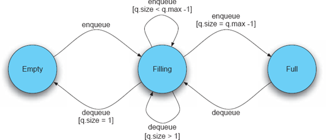
Figura 8-3. Protocolo de interação para o componente QueueServer. Transições correspondentes a operações como front e is_empty, tipicamente fornecidas por um componente de fila, foram omitidas para maior clareza. Os protetores de transição são cercados por parênteses. A suposição é que a fila pode conter pelo menos dois elementos.
O protocolo de interação de um componente pode ser especificado usando diferentes notações. Frequentemente, é modelado por meio de diagramas de transição de estado (Yellin e Strom 1994). Analisar o sistema para consistência de interação nesse caso consiste em garantir que uma dada sequência de solicitações de operação corresponda a alguma sequência de transições legais de estado especificadas pelo protocolo de cada componente.
Um exemplo desse protocolo de interação é fornecido na Figura 8-3. Na figura, o componente QueueServer exige que pelo menos um elemento sempre seja enfileirado antes que uma tentativa de desenfilear um elemento possa ser feita; além disso, ele assume que nenhuma tentativa de enfileirar elementos em uma fila completa será feita. Um componente QueueClient que não cumpre essas restrições ou seja, cuja sequência de invocações não pode ser executada pela máquina de estados da Figura 8-3 causará uma inconsistência de interação com o QueueServer.
Inconsistência no Refinamento
As inconsistências de refinamento decorrem do fato de que a arquitetura de um sistema é frequentemente capturada em múltiplos níveis de abstração. Por exemplo, um modelo de nível muito alto da arquitetura pode representar apenas os subsistemas principais e suas dependências, enquanto um modelo de nível inferior pode elaborar muitos detalhes desses subsistemas e dependências. Como exemplo ilustrativo, a Figura 8-4 mostra a arquitetura de alto nível do sistema operacional Linux, fornecida por Ivan Bowman e colegas. (Bowman, Holt e Brewster 1999), e seu subsistema Process Scheduler modelado como um conector composto, fornecido por Mehta et al. (Mehta, Medvidović e Phadke 2000). Analisar a arquitetura do Linux para consistência exigiria estabelecer as seguintes três condições:
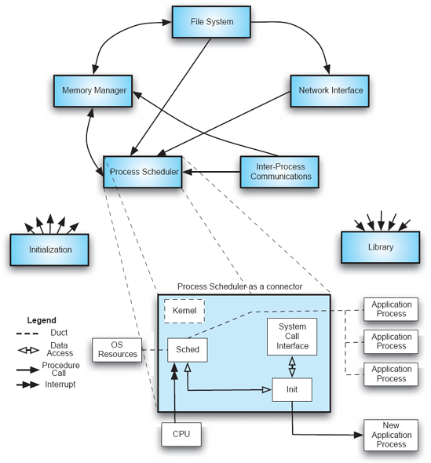
Figura 8-4. Um modelo de altíssimo nível do sistema operacional Linux [adotado de Bowman et al. (Bowman, Holt, and Brewster 1999) © 1999 ACM, Inc. Reimpresso com permissão.] e um modelo detalhado do conector Linux Process Scheduler.
O leitor deve observar que a Figura 8-4 não contém informações suficientes para estabelecer as três condições acima. Isso ocorre porque tanto os modelos de nível superior quanto os de nível inferior são incompletos. A única observação que pode ser feita com certeza é que o Agendador de Processos do Linux tem sido mantido como uma entidade separada entre os dois níveis de refinamento. No entanto, no nível inferior é modelado como um conector, enquanto no nível superior era um componente. Análises adicionais, e informações adicionais para baseá-la, seriam necessárias antes que qualquer determinação específica possa ser tomada sobre se essa decisão transformar um componente em um conector violou decisões arquitetônicas de nível superior e qual impacto isso teve no restante da arquitetura.
Compatibilidade
Compatibilidade é uma propriedade externa de um modelo arquitetônico, destinada a garantir que o modelo cumpra as diretrizes e restrições de design impostas por um estilo arquitetônico, uma arquitetura de referência ou um padrão arquitetônico. Se as restrições de projeto forem capturadas formalmente, ou pelo menos de forma rigorosa, garantir a compatibilidade da arquitetura com elas será relativamente simples. Se uma arquitetura deve ser compatível com um conjunto de diretrizes de design semiformais ou informalmente especificadas, analisar a arquitetura para compatibilidade pode ser mais desafiador e o resultado do processo de análise também pode ser ambíguo às vezes.
Arquiteturas de referência geralmente são especificadas formalmente, usando uma linguagem de descrição de arquitetura. Portanto, estabelecer a compatibilidade da arquitetura de um dado sistema com a arquitetura de referência pode ser um processo preciso e automatizável. Como uma arquitetura de referência captura um conjunto de propriedades que devem ser verdadeiras em qualquer número de sistemas em um determinado domínio, ela pode ser apenas parcialmente especificada ou certas partes podem estar em um nível muito alto de abstração. Nesses casos, estabelecer que uma arquitetura específica para o produto adere à arquitetura de referência pode ser alcançado garantindo consistência de refinamento, da maneira discutida acima.
No entanto, como o leitor lembrará deCapítulo 4e veremos em capítulos futuros que a maioria dos estilos arquitetônicos e muitos padrões fornecem diretrizes gerais de design de alto nível, de modo que estabelecer a adesão de uma arquitetura a elas possa ser mais desafiador. A dificuldade pode surgir da nebulosidade na definição do estilo ou da imprecisão ou incompletude do modelo arquitetônico. Por exemploFigura 8-5retrata a arquitetura do Lunar Lander de acordo com o estilo baseado em eventos. Este diagrama foi mostrado pela primeira vez emCapítulo 4, com um layout de componentes ligeiramente diferente, assim como os diagramas relativamente semelhantes para as arquiteturas do módulo lunar no C2 (Figura 4-23) e quadro negro (Figura 4-16) estilos. Determinar o estilo ao qual essa arquitetura adere é uma tarefa não trivial: a configuração representada dos componentes pode, de fato, também seguir os princípios de C2, como a independência do substrato. Da mesma forma, esse layout visual específico da topologia da arquitetura pode ser enganoso, pois o componente Espaçonave pode, de fato, desempenhar o papel de quadro negro nesse sistema. Em casos como este, o arquiteto pode precisar obter informações adicionais, confiar em conhecimento tácito e usar uma ou mais técnicas de análise arquitetônica apresentadas mais adiante neste capítulo.
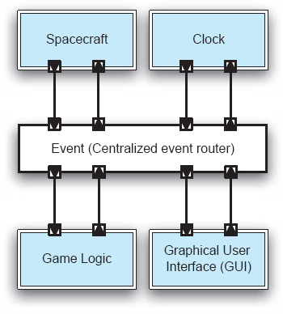
Figura 8-5. Uma representação da arquitetura do Lunar Lander de acordo com o estilo baseado em eventos.
Exatidão
A correção é uma propriedade externa de um modelo arquitetônico. A arquitetura de um sistema é considerada correta em relação a uma especificação externa de sistema se as decisões de design arquitetônico realizarem plenamente essas especificações. Além disso, a implementação do sistema é correta em relação à arquitetura do sistema se a implementação capturar e realizar totalmente todas as principais decisões de projeto que compõem a arquitetura. A correção é, portanto, relativa: é o resultado da arquitetura em relação a outro artefato, onde o artefato tem a intenção de elaborar e cumprir a arquitetura ou a arquitetura pretende elaborar e cumprir o artefato.
Uma observação interessante surge na implementação de muitos grandes sistemas de software modernos que reutilizam funcionalidades prontas a usar, ou soluções arquitetônicas prontas a usar, como arquiteturas de referência. Nesses casos, é muito provável que, por meio dos componentes prontos para a estante, o sistema implementado inclua elementos estruturais ou funcionalidades, bem como propriedades não funcionais, que não são especificadas nos requisitos e/ou não modeladas na arquitetura. Com a noção de correção baseada em refinamento dos anos 1970, tais sistemas não seriam considerados corretos em relação à arquitetura. No entanto, com a noção de correção baseada no cumprimento, como descrito acima, tais sistemas não são apenas corretos, mas provavelmente são criados de forma eficiente e formam uma base adequada para cumprir eficientemente novos requisitos do sistema.
ESCOPO DA ANÁLISE
A arquitetura de um sistema de software pode ser analisada sob diferentes perspectivas e em diferentes níveis. Arquitetos podem se interessar em avaliar as propriedades de componentes ou conectores individuais, ou até mesmo seus elementos constituintes, como interfaces ou portas. Mais frequentemente, arquitetos podem se interessar pelas propriedades exibidas pelas composições de componentes e conectores em um dado subsistema ou sistema inteiro. Um foco específico da análise em nível de (sub)sistema pode estar nos dados trocados entre os elementos do sistema.
Além de avaliar as propriedades de uma única arquitetura, os arquitetos podem às vezes precisar considerar duas ou mais arquiteturas simultaneamente. Um desses casos é quando a arquitetura de um dado sistema é analisada em múltiplos níveis de abstração. Por exemplo, um modelo arquitetônico mais detalhado pode ser comparado ao modelo de nível superior do qual foi derivado, para garantir que nenhuma decisão de projeto existente tenha sido violada ou decisões de projeto não intencionais tenham sido introduzidas. Um tipo semelhante de análise ocorre quando dois modelos arquitetônicos em níveis semelhantes de abstração são comparados para estabelecer semelhanças de projeto ou conformidade com restrições como as incorporadas em uma arquitetura de referência.
Análise em Nível de Componente e Conector
Em um sistema grande, componentes e conectores individuais podem nem sempre ser tão interessantes para um arquiteto quanto suas composições, mas tanto componentes quanto conectores precisam fornecer serviços específicos em níveis de qualidade específicos. No caso de componentes, isso normalmente significa funcionalidade específica da aplicação; No caso dos conectores, isso significa serviços de interação independentes da aplicação.
O tipo mais simples de análise em nível de componente e conector garante que o componente ou conector fornecido forneça os serviços esperados dele. Por exemplo, a interface de um componente ou conector pode ser inspecionada para garantir que nenhum serviço esperado esteja faltando. Como ilustração, a Figura 8-6 mostra o componente Data Store do Lunar Lander modelado em xADLite. É trivial analisar esse componente, seja manualmente ou automaticamente, para estabelecer que ele fornece tanto os serviços getValues quanto storeValues; além disso, se um stakeholder do sistema espera ou exige que o componente Data Store ofereça serviços adicionais, é fácil verificar que tais serviços não existem atualmente. Mesmo que o componente fosse muito maior e oferecesse muito mais serviços, essa tarefa não seria significativamente mais difícil.
Claro, "marcar" os serviços fornecidos por um componente ou conector não garante que esses serviços sejam modelados corretamente. A análise descrita pode ser considerada equivalente a estabelecer apenas a consistência de nomes. Um componente ou conector pode fornecer serviços com os nomes esperados, mas com interfaces incorretas. Por exemplo, getValues no exemplo acima pode ser modelado para esperar os valores em um formato errado, como não tipado versus tipado ou string versus inteiro. Portanto, não basta estabelecer que o componente ou conector fornece serviços com nomes apropriados; A interface completa do componente ou conector precisa ser analisada. As informações fornecidas na Figura 8-6, portanto, terão que ser complementadas com detalhes adicionais, possivelmente de outros modelos.
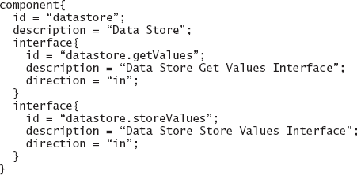
Figura 8-6. Componente do Armazenamento de Dados do Lunar Lander modelado em xADLite. Este modelo é extraído daquele fornecido emCapítulo 6emFigura 6-27.
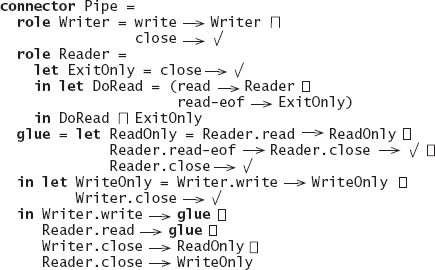
Figura 8-7. Conector de cano modelado em Wright.
Levando esse argumento um passo adiante, não é suficiente garantir que os serviços do componente ou do conector sejam exportados via uma interface apropriada. A semântica desses serviços, conforme modelada (e, eventualmente, conforme implementada) pode ser diferente da semântica desejada. Assim, por exemplo, o serviço getValues da Figura 8-6 pode não ser modelado de modo que acesse o Armazenamento de Dados para obter os valores necessários, mas pode solicitar esses valores a um usuário do sistema. Como o uso pretendido do componente, implícito em seu nome, é acessar um repositório, essa implementação do getValues, embora legítima em princípio, estaria errada nesse contexto.
De forma semelhante, um conector pode fornecer serviços de interação com semânticas diferentes da semântica esperada. Por exemplo, pode-se esperar que um conector suporte semântica de invocação assíncrona, mas na verdade é modelado para invocação síncrona. Estabelecer esse tipo de consistência semântica não é trivial. Considere como ilustração um modelo de umCachimboconector na ADL de Wright discutido emCapítulo 6; O modelo é representado emFigura 8-7. OCachimboO conector desempenha dois papéis; ou seja, oferece dois serviços: Leitor e Escritor. A interação deles, ou seja, o comportamento geral do conector, é capturada pela cola do conector. Mesmo que um tubo seja um conector relativamente simples, estabelecer manualmente que ele segue seu comportamento esperado é significativamente mais desafiador do que com a conformidade com nome ou interface. Por exemplo, a semântica pretendida é permitir a escrita livre no pipe, como na especificação atual do papel Writer, ou o pipe possui um buffer limitado de modo que escrever uma certa quantidade de dados exija que pelo menos parte desses dados seja lida antes que dados adicionais possam ser escritos? Avaliar conectores mais complexos para esses tipos de propriedades de interação será muito mais difícil e pode ser especialmente propenso a erros.
Análise em Nível de Subsistema e Sistema
Mesmo que componentes e conectores individuais tenham propriedades desejadas, não há garantias de que suas composições em um determinado sistema se comportarão como esperado, ou sequer serão legais. A interação entre componentes complexos pode ser muito complexa. Arquitetos podem avaliar as propriedades de suas composições no nível de todo o sistema ou de forma incremental, focando em subsistemas específicos.
O incremento mais gerenciável é a conformidade par a par, onde apenas dois componentes interagentes são considerados por vez, e a conformidade com nome, interface, comportamento e interação são estabelecidas conforme discutido acima. O próximo passo é pegar um conjunto de componentes possivelmente interagindo através de um único conector, como os mostrados na Figura 8-5. A maioria das técnicas de análise pode facilmente apoiar ambos os casos. Garantir propriedades desejáveis em nível de grandes subsistemas e sistemas inteiros pode ser bastante desafiador, e muitas técnicas de análise tentaram controlar esse problema.
Em certos cenários, pode ser óbvio que composições de dois ou mais componentes que possuem respectivamente propriedades α, β, γ e assim por diante, terão alguma combinação dessas propriedades. Por exemplo, combinar um componente de criptografia de dados destinado a fornecer segurança na comunicação com um componente de compressão de dados destinado a proporcionar eficiência na comunicação pode ser esperado que ofereça tanto segurança quanto eficiência.
Muito mais frequente na prática ocorre a situação em que a interação entre os componentes resultará em sua interferência e no aumento ou diminuição das propriedades uns dos outros. Isso será aceitável, e até desejável, em certos casos. Por exemplo, um componente que fornece um serviço crítico de forma muito eficiente pode ser vulnerável a ataques maliciosos. Os arquitetos do sistema podem decidir que sacrificar parte da eficiência é aceitável para melhorar a segurança do sistema, e podem compor esse componente com um ou mais componentes que fornecem serviços como criptografia, autenticação ou autorização. Da mesma forma, em muitos sistemas em tempo real, um componente que calcula seus resultados ou fornece dados mais rapidamente e/ou com mais frequência do que o sistema requer será composto por um componente (simples) que introduz os atrasos necessários. Tais composições serão sinérgicas: o sistema será, em última análise, maior do que a soma de suas partes.
Tal interferência entre componentes do sistema não será desejável em todas as situações. Mais importante ainda, tal interferência muitas vezes não será tão óbvia quanto nos cenários acima e resultará em propriedades compostas não intencionais. Há muitos exemplos. Um exemplo bem conhecido da literatura de engenharia de software envolveu a integração de dois componentes que assumiam que possuíam o principal fio de controle do sistema, resultando em um sistema inutilizável (Garlan, Allen e Ockerbloom 1995). Outro exemplo semelhante envolveu a integração de componentes concorrentes implementados em duas linguagens de programação diferentes. O desempenho do sistema resultante era inaceitável, e uma análise longa e minuciosa do sistema revelou que os modelos de threading dos componentes individuais eram incompatíveis (Maybee, Heimbinger e Osterweil 1996). O leitor pode facilmente imaginar muitos outros cenários semelhantes, como quando um sistema compreende componentes eficientes em memória interativos (que usam algoritmos de compressão de dados computacionalmente intensivos) e componentes eficientes em CPU (que usam técnicas como cache de dados e pré-busca) ou, além disso, quando um componente que introduz um serviço de tolerância a falhas (por exemplo, via replicação contínua de estado) é introduzido em tal sistema.
Análise Arquitetônica e Presunto Cozido com Mel
Cenários como os discutidos nesta seção são uma razão direta pela qual muitos sistemas de software modernos sofrem com desempenho, segurança e escalabilidade pobres; tamanho desnecessariamente grande; alta complexidade; adaptabilidade limitada; e assim por diante. Por exemplo, um sistema concorrente em que qualquer componente ou subsistema considerado isoladamente está livre de deadlock, livelock e livre de fome pode, de fato, sofrer de deadlock, livelock ou fome devido à interação imprevista de múltiplos componentes e/ou subsistemas.
É isso que Dewayne Perry chama coloquialmente de síndrome do presunto assado com mel: mel é sem gordura, enquanto presunto é sem açúcar; presunto assado com mel, portanto, deve ser tanto sem gordura quanto sem açúcar. Claramente, isso não é verdade, e tirar tais conclusões com base nas evidências disponíveis dos componentes individuais de um sistema pode ser errado e perigoso. A síndrome do presunto assado com mel é uma das principais razões pelas quais a análise arquitetônica em nível de subsistemas e sistemas é de importância crítica.
Dados trocados no Sistema ou Subsistema
Em muitos grandes sistemas de software distribuídos, grandes quantidades de dados são processadas, trocadas e armazenadas. Exemplos de sistemas intensivos em dados são numerosos e aparecem em domínios tão amplos quanto computação científica, muitas aplicações baseadas na Web, comércio eletrônico e multimídia. Nesses sistemas, além das propriedades dos elementos estruturais arquitetônicos individuais componentes e conectores e de toda a configuração arquitetônica, é importante garantir que os dados do sistema sejam devidamente modelados, implementados e trocados entre os elementos estruturais. Isso envolve avaliar os elementos de dados, incluindo os seguintes.
Como exemplo simples, considere um sistema composto por um componente produtor de dados e dois componentes de consumidor de dados, cuja configuração arquitetônica é representada na Figura 8-8. A figura também mostra as respectivas frequências nas quais eles conseguem trocar dados. O componente Produtor envia um megabit por segundo, e o Consumidor 1 consegue receber e processar esses dados em tempo hábil. Na verdade, o Consumidor 1 pode esperar ociosamente até 50% do tempo para receber dados adicionais do Produtor. No entanto, o Consumidor 2 consegue receber e processar os dados a uma taxa que representa apenas metade da taxa de produção. Isso significa que o Consumidor 2 pode perder até metade dos dados gerados.
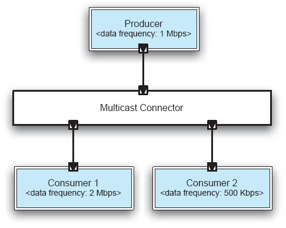
Figura 8-8. Um sistema simples com um produtor de dados e dois consumidores, com as frequências nas quais eles podem enviar e receber dados, respectivamente.
Esse problema pode ser mitigado se o Conector Multicast que atende os três componentes conseguir armazenar os dados em buffer, mas claramente, se o sistema estiver funcionando por muito tempo, o buffer do conector eventualmente transbordará. O conector também precisará incluir lógica de processamento adicional para armazenar temporariamente os dados e também encaminhá-los para os dois componentes na ordem recebida, o que introduzirá sobrecarga adicional no sistema. Se os dois componentes do Consumidor exigirem que os dados estejam em formatos diferentes daqueles gerados pelo Produtor, o conector também terá que atuar como um adaptador, introduzindo mais sobrecarga. Da mesma forma, o conector pode precisar realizar tarefas adicionais baseadas nos requisitos arquitetônicos, como criptografar os dados para segurança, garantir que os dados sejam entregues de acordo com a política de roteamento especificada (por exemplo, best-effort ou exatamente-once), ou comprimir os dados, se necessário.
Arquiteturas em Diferentes Níveis de Abstração
Durante o processo de projeto arquitetônico, os arquitetos frequentemente abordam primeiro os requisitos críticos do sistema e, em seguida, introduzem elementos adicionais na arquitetura e refinam a arquitetura para incluir detalhes adicionais necessários para a realização da arquitetura no sistema final. Isso pode envolver a adição e a quebra adicional de elementos arquitetônicos, bem como a introdução e refinamento de decisões de design existentes.
Considere um exemplo simples. Uma análise arquitetônica de alto nível de um sistema pode se assemelhar ao diagrama mostrado na Figura 8-9. Para simplificar, os conectores são representados apenas como setas indicando os componentes interagindo, bem como a direção da interação. Por exemplo, o componente C1 inicia as interações com os componentes C3 e C4. Como ocorre com todas as descrições arquitetônicas de caixas e setas, muitos detalhes dessa arquitetura estão ausentes, incluindo as interfaces dos componentes, detalhes de seus comportamentos e dos dados trocados, bem como a semântica de suas interações, como a envolvendo os componentes C1, C2 e C3. Embora importante, essas informações não são críticas para esta discussão.
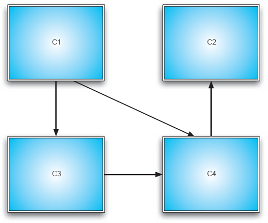
Figura 8-9. Uma configuração arquitetônica de alto nível.
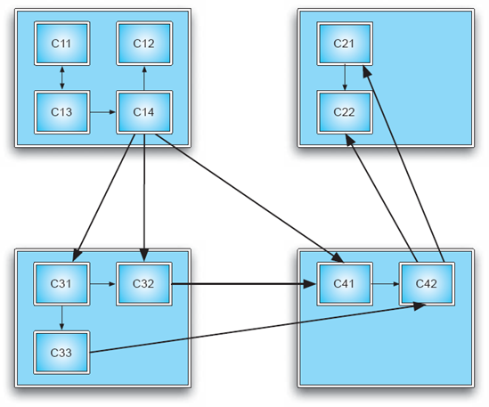
Figuras 8-10. Uma configuração arquitetônica refinada e mais detalhada.
As Figuras 8-10 mostram outra configuração arquitetônica, que pretende ser um refinamento daquela mostrada na Figura 8-9. Para conveniência, grupos de componentes na arquitetura refinada que se presume comporem os componentes originais são destacados. Por exemplo, os componentes C11, C12, C13 e C14, juntamente com suas interconexões nas Figuras 8-10, compõem o componente C1 das Figuras 8-9. Além disso, os conectores são refinados, de modo que fica claro que apenas o subcomponente C14 de C1 está envolvido em interações com os subcomponentes de C3 e C4.
No processo de refinamento, vários problemas podem ser introduzidos, como discutido acima no contexto da incompatibilidade de refinamento. Os casos mais fáceis de resolver são aqueles em que uma decisão de projeto arquitetônico foi claramente invalidada. No entanto, mesmo a adição ou modificação de decisões arquitetônicas pode causar uma inconsistência de refinamento dependendo do contexto e da variedade de mudanças arquitetônicas permitidas. Por exemplo, a arquitetura representada nas Figuras 8-9 e 8-10 pode precisar cumprir uma restrição arquitetônica que determina que as interações que cruzam os limites dos quatro componentes originais do sistema devem ter um único alvo e um único destino. Nesse caso, elaborar as interações entre os componentes da arquitetura, conforme mostrado na Figura 8-10, violaria as restrições, tanto no caso das interações do componente C1 com C3 quanto das interações de C4 com C2.
Claramente, com base nas poucas informações fornecidas sobre as arquiteturas emFigura 8-9, não está claro se as mudanças na arquitetura original representadas emFigura 8-10Deveria ser permitido. Isso dependerá de muitos fatores, e alguns, embora não todos, serão evidentes a partir de uma modelagem mais detalhada e rigorosa da arquitetura, como discutido emCapítulo 6. Isso também dependerá de uma política de refinamento, que pode ser explicitamente declarada. Assim, por exemplo, Mark Moriconi e colegas definem uma política de refinamento chamadaExtensão conservadora(Moriconi, Qian e Riemenschneider 1995). A extensão conservadora essencialmente impede que um arquiteto introduza quaisquer novas funcionalidades na arquitetura de um sistema e, em vez disso, o restringe a elaborar ou possivelmente eliminar aquelas características já existentes na arquitetura mais abstrata, ou seja, de nível mais alto. Embora uma propriedade como a extensão conservadora nem sempre seja útil na prática, Moriconi e colegas demonstraram que ela é passível de especificação e análise formal. Outras políticas de refinamento podem ser muito menos restritivas, mas essa mesma flexibilidade pode dificultar comprovar que estão sendo seguidas em uma situação concreta.
Comparação de duas ou mais arquiteturas
Em certas situações, é importante que os arquitetos compreendam a relação entre a arquitetura que lhes interessa e uma arquitetura de base com propriedades conhecidas. Um desses casos, discutido anteriormente neste capítulo, é garantir a conformidade da arquitetura de um dado sistema com uma arquitetura de referência. Outros casos podem incluir garantir que a arquitetura cumpra as diretrizes de design capturadas em um estilo arquitetônico ou com um padrão arquitetônico específico. Também é, claro, possível que a arquitetura básica seja simplesmente aquela que o arquiteto conhece e compreende. O arquiteto pode ter encontrado a arquitetura na literatura, pode ser a arquitetura de um produto relacionado que ele ou ela e colegas já haviam desenvolvido anteriormente, ou pode até ser uma arquitetura recuperada de um sistema (possivelmente até mesmo de um concorrente) que exibe propriedades desejadas.
Tais comparações de duas ou mais arquiteturas envolvem a comparação das capacidades de processamento e armazenamento de dados fornecidas pelos componentes, as interações incorporadas nos conectores, as características da troca de dados, as composições dos componentes e conectores na configuração do sistema, e as fontes das propriedades não funcionais exibidas pelo sistema. É possível que as arquiteturas em questão estejam em diferentes níveis de abstração, caso em que as técnicas discutidas na subseção anterior podem ser empregadas.
PREOCUPAÇÃO ARQUITETÔNICA SENDO ANALISADA
As técnicas de análise arquitetônica são direcionadas a diferentes facetas de uma determinada arquitetura. Algumas técnicas buscam garantir principalmente as propriedades estruturais da arquitetura; outras focam nos comportamentos fornecidos pelos elementos arquitetônicos e sua composição; outras podem analisar se as interações entre os elementos arquitetônicos seguem certos requisitos e restrições; finalmente, as propriedades não funcionaisExpostos pela arquitetura são frequentemente considerados muito importantes e, por isso, são estudados cuidadosamente.
Na prática, uma determinada técnica de análise, ou conjunto de técnicas, abordará mais de uma preocupação arquitetônica ao mesmo tempo. Nesta seção, focamos em cada preocupação individualmente para facilitar a exposição e também discutimos as características relevantes de cada uma.
Características Estruturais
As características estruturais de uma arquitetura de software incluem preocupações como a conectividade entre os componentes e conectores da arquitetura, o contenimento de elementos arquitetônicos de nível inferior em elementos compostos de nível superior, possíveis pontos de distribuição de rede e as potenciais arquiteturas de implantação de um dado sistema. Essas preocupações podem ajudar a determinar se a arquitetura está bem formada. Exemplos incluem componentes ou subsistemas desconectados do restante da arquitetura, caminhos ausentes entre componentes e conectores que deveriam interagir, caminhos existentes entre componentes e conectores que não são desejados, encapsulamento de componentes ou conectores que devem ser visíveis e acessíveis em um nível superior de composição hierárquica, e assim por diante. A análise estrutural também pode estabelecer adesão a restrições arquitetônicas, padrões e estilos. Preocupações estruturais também podem ajudar na análise de diferentes aspectos da concorrência e distribuição do sistema, pois vinculam os elementos de software do sistema e suas propriedades às plataformas de hardware em que serão executados.
Características comportamentais
Uma arquitetura bem estruturada tem utilidade limitada se os componentes individuais não fornecerem os comportamentos esperados deles e, além disso, se não se combinarem para fornecer os comportamentos esperados em nível de sistema. Portanto, analisar as características comportamentais de uma arquitetura tem duas facetas relacionadas:
É possível, especialmente em sistemas compostos por componentes de terceiros obtidos prontos, que o conhecimento de um arquiteto sobre o funcionamento interno de diferentes componentes do sistema seja restrito às interfaces públicas dos componentes. Como indicado anteriormente, particularmente emSeção 8.1, os tipos de propriedades comportamentais que podem ser inferidas no nível das interfaces são bastante limitados, e muitos problemas potenciais com a arquitetura podem permanecer despercebidos.
Características de Interação
As características relevantes das interações em uma dada arquitetura podem incluir os números e tipos de conectores de software distintos, e seus valores para diferentes dimensões de conectores (recallCapítulo 5). Características de interação podem ajudar a determinar se a arquitetura realmente será capaz de cumprir alguns de seus requisitos. Por exemplo, um conector sem buffer no exemplo deFigura 8-8resultaria em um sistema no qual um dos componentes recebia no máximo metade de todos os dados.
A análise das características de interação também pode abranger os protocolos de interação para diferentes componentes do sistema (por exemplo, recall Figura 8-3) e comportamentos internos especificados para diferentes conectores de sistema (por exemplo, recall Figure 8-7). Tais detalhes ajudariam na análise das características de interação de grão mais fino, como se um componente que interage por meio de um conector apropriado será legalmente acessado ou se um conjunto de componentes interagindo pode travar.
Características Não Funcionais
Características não funcionais formam uma dimensão crítica de quase todos os sistemas de software. Essas características normalmente atravessam múltiplos componentes e conectores, o que as torna particularmente difíceis de avaliar. Além disso, características não funcionais muitas vezes não são devidamente compreendidas, são de natureza qualitativa e suas definições são parciais ou informais. Portanto, embora as características não funcionais representem um desafio importante e formidável para arquitetos de software, técnicas de análise arquitetônica focadas nessas características são escassas.
NÍVEL DE FORMALIDADE DOS MODELOS ARQUITETÔNICOS
A relação entre modelos arquitetônicos e análise é simbiótica: o que os stakeholders do sistema querem poder analisar influenciará o que os arquitetos de software capturam em seus modelos arquitetônicos. Por outro lado, o que os arquitetos capturam nos modelos arquitetônicos determina diretamente o que poderão analisar e quais métodos de análise utilizarão para isso.
Modelos arquitetônicos foram discutidos em detalhes nos capítulos anteriores, e particularmente emCapítulo 6. Aqui, vamos analisar especificamente o papel que eles desempenham no contexto da análise arquitetônica. Para esse fim, os modelos arquitetônicos podem ser classificados como informais, semiformais e formais.
Modelos Informais
Modelos informais são tipicamente capturados em diagramas de caixas e linhas, como mostrado na Figura 8-1. Modelos informais podem fornecer uma visão útil e em alto nível do sistema. Eles são receptivos a análises informais e manuais, tipicamente por uma ampla parcela de partes interessadas, incluindo partes não técnicas, como gestores e clientes do sistema. Por exemplo, os gerentes de sistema podem usá-los para determinar as necessidades gerais de pessoal de um projeto. Ao mesmo tempo, modelos informais devem ser abordados com cautela devido à sua ambiguidade inerente e falta de detalhes.
Modelos semiformais
A maioria dos modelos arquitetônicos usados na prática são semiformais. Uma notação que busca ser útil para um grande número de stakeholders do sistema, tanto técnicos quanto não técnicos, normalmente tentará encontrar um equilíbrio entre um alto grau de precisão e formalidade, por um lado, e expressividade e compreensão, por outro. Um exemplo amplamente utilizado é a Unified Modeling Language (UML). Linguagens semiformais como o UML são adequadas tanto para análise manual quanto automatizada. Sua imprecisão parcial dificulta a realização de algumas análises mais sofisticadas, para as quais são necessários modelos formais.
Modelos formais
Enquanto as notações de modelagem semiformal normalmente possuem apenas uma sintaxe formalmente definida, as notações formais também possuem semântica formalmente definida. Um exemplo de notação formal é Wright, que foi usada para especificar o conector Pipe na Figura 8-7. Modelos formais são inerentemente passíveis de análise formal e automatizada e normalmente destinados aos stakeholders técnicos do sistema. Ao mesmo tempo, produzir modelos arquitetônicos completos usando uma notação formal pode ser trabalhoso. Além disso, modelos formais têm sido frequentemente demonstrados na prática como sofrendo de problemas de escalabilidade.
TIPO DE ANÁLISE
Uma categorização útil das técnicas de análise arquitetônica é em técnicas estáticas, dinâmicas ou baseadas em cenários. Discutimos as três categorias e o papel que os modelos arquitetônicos desempenham em cada uma.
Análise Estática
A análise estática envolve inferir as propriedades de um sistema de software a partir de um ou mais de seus modelos, sem realmente executar esses modelos. Um exemplo simples de análise estática é a análise sintática: determinar se o modelo do sistema segue as regras sintáticas da notação de modelagem, seja uma linguagem de descrição arquitetônica, notação de diagramas de design ou linguagem de programação. A análise estática pode ser automatizada (por exemplo, compilação) ou manual (por exemplo, inspeção). Todas as notações de modelagem arquitetônica, incluindo os diagramas informais de caixas e linhas, são passíveis de análise estática, embora as notações mais formais e expressivas possam ser aproveitadas para fornecer respostas mais precisas e sofisticadas. As notações formais usadas em sistemas de modelagem de software incluem:
Deve-se notar que as notações de exemplo acima não podem ser consideradas como linguagens de descrição de arquitetura, ou ADLs, pois por si só não fornecem construtos explícitos de modelagem de arquitetura. No entanto, é possível usá-los como base de uma ADL, de forma semelhante à forma que Wright aproveita processos sequenciais comunicativos (CSP), conforme discutido emCapítulo 6.
Análise Dinâmica
A análise dinâmica envolve realmente executar ou simular a execução de um modelo do sistema de software. Para realizar análise dinâmica em um modelo arquitetônico, sua base semântica deve ser executável ou passível de simulação. Diagramas de transição de estado são um exemplo de formalismo executável com o qual o leitor deve estar familiarizado. Outros formalismos executáveis incluem eventos discretos, redes de fila (Lazowska et al. 1984) e redes de Petri.
Análise Baseada em Cenários
Para sistemas de software grandes e complexos, muitas vezes é inviável afirmar uma determinada propriedade para todo o sistema sobre todo o espaço de seus possíveis estados ou execuções. Para esses sistemas, casos de uso específicos são identificados que representam os cenários de uso de sistemas mais importantes ou mais frequentes, e a análise é focada neles. A análise baseada em cenários pode ser um exemplo tanto da análise estática como ferramenta para reduzir o espaço de estados de um sistema modelado, como discutido mais adiante neste capítulo quanto da análise dinâmica como uma ferramenta para reduzir o espaço de execução do sistema. Ao mesmo tempo, a análise baseada em cenários exige que os arquitetos tenham muito cuidado com as inferências que fazem a partir de suas evidências inerentemente limitadas.
NÍVEL DE AUTOMAÇÃO
Diferentes técnicas de análise arquitetônica são adequadas a diferentes níveis de automação. O nível de automação depende de vários fatores, incluindo a formalidade e completude do modelo arquitetônico e do imóvel avaliado. Em geral, um modelo arquitetônico fornecido em uma notação mais formal será mais receptivo à análise automatizada do que um modelo fornecido em uma notação mais informal. Da mesma forma, um modelo que captura um número maior das decisões de design arquitetônico para o sistema dado será mais receptivo a análises rigorosas e automatizadas do que um modelo que está faltando muitas dessas decisões de projeto. Por fim, uma propriedade bem compreendida que é quantificável e pode ser definida formalmente será mais fácil de avaliar automaticamente do que uma propriedade qualitativa que pode não ser tão bem compreendida. Esse último ponto é particularmente importante na engenharia de software: Como será demonstrado emCapítulo 12, muitas propriedades não funcionais, que são críticas para o sucesso da maioria dos sistemas de software, são compreendidas no nível da intuição, anedota e diretriz informal.
Manual
A análise manual de arquiteturas de software exige envolvimento humano significativo e, portanto, é cara. No entanto, a análise manual pode ser realizada em modelos com diferentes níveis de detalhe, rigor, formalidade e completude. Tem a vantagem adicional de que a justificativa arquitetônica, que muitas vezes é tácita, pode ser levada em conta. Esse tipo de análise também pode ser necessário quando múltiplas propriedades potencialmente conflitantes devem ser garantidas em conjunto.
Diversas técnicas de análise arquitetônica se enquadram nessa categoria. Essas são técnicas baseadas em inspeção e serão detalhadas mais adiante neste capítulo. Um exemplo bem conhecido é o método de análise de compromisso arquitetônico, ou ATAM (Clements, Kazman e Klein 2002). Os resultados da análise manual são tipicamente qualitativos. Como nem sempre é possível quantificar propriedades importantes de um sistema de software como escalabilidade, adaptabilidade ou heterogeneidade qualquer análise do grau em que o sistema apresenta essas propriedades não será quantificável. Os resultados da análise também são frequentemente qualificados por um contexto particular no qual um sistema pode apresentar uma determinada propriedade. Técnicas baseadas em cenários se enquadram nessa categoria.
Dada a natureza intensiva para humanos dessa categoria de técnicas de análise arquitetônica, uma preocupação crítica deve ser tornar a análise confiável e repetível. Como os modelos arquitetônicos, assim como as propriedades de interesse, podem ser menos do que formalmente capturados, o foco de muitas técnicas manuais de análise tem sido especificar um processo detalhado que deve ser seguido pelos arquitetos de sistemas e outros envolvidos na análise.
Parcialmente Automatizado
Níveis crescentes de rigor nos modelos arquitetônicos e na compreensão das principais propriedades dos sistemas de software apresentam oportunidades para automatizar diferentes aspectos da análise arquitetônica. Na verdade, a maioria das análises arquitetônicas pode ser pelo menos parcialmente automatizada, envolvendo tanto ferramentas de software quanto intervenção humana. Nesse sentido, as técnicas de análise arquitetônica podem ser vistas como abrangendo um espectro de automação, sendo a análise manual e totalmente automatizada os extremos desse espectro.
A maioria das notações de modelagem arquitetônica apresentadas emCapítulo 6são suscetíveis de garantir a correção sintática de uma dada descrição arquitetônica, bem como diferentes graus de correção semântica. Por exemplo, um modelo xADL pode ser analisado para regras específicas de interconectividade de componentes de estilo, enquanto Wright permite analisar uma composição dada de componentes que se comunicam por meio de um conector para deadlocks. Ao mesmo tempo, nenhum dos modelos pode ser analisado automaticamente para outras propriedades, como confiabilidade, disponibilidade, confiabilidade ou latência. Isso se deve ao menos em parte ao fato de que parâmetros do sistema relevantes para avaliar essas propriedades não são capturados na medida necessária, ou nem sequer por essas notações de modelagem arquitetônica.
Totalmente Automatizado
Pode-se argumentar que as análises específicas mencionadas acima, como garantir a correção sintática ou a liberdade de bloqueios em uma descrição arquitetônica, podem ser consideradas totalmente automatizáveis, já que é possível completá-las sem envolvimento humano. Ao mesmo tempo, os resultados das análises automatizadas são tipicamente parciais: o fato de que uma descrição arquitetônica fornecida em uma dada ADL adere totalmente à sintaxe dessa ADL, ou que uma descrição parcial do sistema esteja livre de impasses, ainda deixa muitas perguntas sobre os respectivos modelos sem resposta. Isso significa que, na prática, técnicas totalmente automatizadas de análise arquitetônica devem ser combinadas com outras técnicas, que por si só podem precisar de intervenção humana, para obter respostas mais abrangentes.
PARTES INTERESSADAS DO SISTEMA
Os stakeholders em um projeto de software frequentemente terão objetivos diferentes. Por exemplo, os clientes podem querer obter o máximo de funcionalidade o mais rápido possível, pelo menor valor possível. Um gerente de projeto pode estar interessado em garantir que o projeto seja adequadamente equipado e que a taxa de despesa não exceda uma determinada meta. O principal objetivo dos arquitetos pode ser entregar um sistema tecnicamente sólido que seja facilmente adaptável no futuro. Por fim, um desenvolvedor pode estar interessado principalmente em garantir que os módulos pelos quais é responsável sejam implementados no prazo e sem bugs. Portanto, os diferentes stakeholders não terão necessariamente as mesmas necessidades de análise de arquitetura. O restante desta seção destaca o papel que a análise arquitetônica desempenha no caso de cada tipo de parte interessada.
Arquitetos
Arquitetos de software devem adotar uma visão global da arquitetura e estão interessados em estabelecer os quatro C da arquitetura: completude, consistência, compatibilidade e correção. Dependendo do contexto e dos objetivos do projeto, os arquitetos podem precisar confiar em todos os tipos de modelos arquitetônicos em todos os níveis de escopo e formalidade. Embora possam preferir usar técnicas de análise automatizada, os arquitetos frequentemente terão que recorrer a técnicas manuais e semi-automatizadas.
Desenvolvedores
Desenvolvedores de software frequentemente têm uma visão mais limitada da arquitetura ou seja, dos módulos ou subsistemas pelos quais são diretamente responsáveis. Assim, os desenvolvedores têm interesse principalmente em estabelecer a consistência de seus módulos com outras partes do sistema com as quais esses módulos interagirão, bem como a compatibilidade com os estilos arquitetônicos exigidos, arquiteturas de referência e padrões. Eles não precisam se preocupar com a completude da arquitetura e, no máximo, podem avaliar sua correção parcial. Os modelos que os desenvolvedores provavelmente acharão mais úteis são formais, com todos os detalhes necessários especificados e prontos para implementação. No entanto, esses provavelmente seriam modelos de elementos individuais pelos quais um determinado desenvolvedor é diretamente responsável, e não modelos de toda a arquitetura.
Gestores
Gerentes de projeto normalmente se interessam principalmente pela completude de uma arquitetura Todos os requisitos são atendidos? e correção Os requisitos são devidamente realizados na arquitetura e, assim, eventualmente serão realizados na implementação? Gerentes também podem se interessar pela compatibilidade da arquitetura se a arquitetura e, eventualmente, o sistema implementado precisarem seguir uma arquitetura de referência ou um conjunto de padrões.
Consistência é propriedade interna de um sistema, e os gestores normalmente não se preocupam com isso, ou seja, naturalmente delegam essas responsabilidades a arquitetos e incorporadores. No entanto, há exceções. Por exemplo, defeitos arquitetônicos podem se tornar um problema grave que começa a afetar o cronograma ou o orçamento do projeto. Alternativamente, clientes ou contratos de projeto podem exigir explicitamente certas propriedades de consistência, nas quais os gerentes de caso precisariam considerá-las explicitamente.
Os tipos de modelos arquitetônicos úteis para gestores geralmente são modelos menos formais de todo o sistema. O foco do gestor frequentemente estará em cruzar propriedades não funcionais do sistema, bem como nas características estruturais e dinâmicas do sistema.
Clientes
Os clientes se interessam principalmente pela completude e correção do sistema comissionado. Suas preocupações podem ser resumidas em duas perguntas-chave:
Um cliente também pode se interessar pela compatibilidade do sistema com certos padrões, e possivelmente referenciar arquiteturas nas quais o cliente tem interesse próprio. A consistência não é de importância crítica a menos que se reflita em defeitos do sistema visíveis externamente.
Em termos de modelos arquitetônicos, os clientes normalmente preferem a compreensibilidade em vez da formalidade dos modelos. Eles se interessam por modelos gerais (a "visão geral") e pelas principais propriedades do sistema. Eles frequentemente se interessam pela avaliação guiada por cenários das características estruturais, comportamentais e dinâmicas de um sistema.
Fornecedores
Fornecedores de software normalmente vendem tecnologia, como componentes individuais e conectores, em vez de arquitetura. Assim, eles se interessam principalmente pela composição desses componentes e conectores, bem como em sua compatibilidade com certos padrões e arquiteturas de referência amplamente utilizadas. Assim como os clientes de um determinado sistema, os fornecedores podem valorizar a compreensão dos modelos arquitetônicos, mas seus clientes são desenvolvedores de software que podem exigir modelos formais do software que compram do fornecedor. O foco principal dos fornecedores é a análise dos elementos individuais e suas propriedades. As características estruturais da arquitetura geral não são tão importantes, embora as características dinâmicas possam ser, pois podem ter implicações na composição-componente dos elementos individuais em sistemas futuros.
TÉCNICAS DE ANÁLISE
Um grande número de técnicas de análise está disponível para arquitetos de software. Alguns deles são variações de técnicas aplicadas a outros artefatos de desenvolvimento de software principalmente especificações formais e código enquanto outros foram desenvolvidos especificamente pensando em arquiteturas de software. Nesta seção, discutimos uma amostra transversal das técnicas de análise arquitetônica. Embora não tenha a intenção de fornecer uma visão geral completa das técnicas existentes, a seção transversal é amplamente representativa.
Dividimos as técnicas de análise arquitetônica em três categorias:
A discussão das técnicas dentro dessas categorias focará nas dimensões da análise arquitetônica descritas acima e resumidas na Figura 8-11.
Inspeções e Revisões
Inspeções e revisões de software são técnicas amplamente utilizadas de análise de código. Se não estiver familiarizado com essas técnicas, o leitor é incentivado a consultar um texto introdutório de engenharia de software. Inspeções e revisões arquitetônicas são realizadas por diferentes partes interessadas para garantir uma variedade de propriedades em uma arquitetura. Eles envolvem um conjunto de atividades conduzidas por stakeholders do sistema, nas quais diferentes modelos arquitetônicos são estudados para propriedades específicas. Essas atividades frequentemente ocorrem em comitês de revisão de arquitetura, onde vários stakeholders definem o objetivo da análise como garantir que a arquitetura satisfaça uma determinada propriedade não funcional e então, em grupo, estudam e criticam cuidadosamente a arquitetura ou algumas de suas partes.
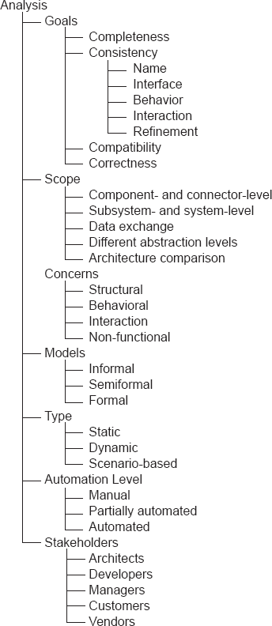
Figuras 8-11. Dimensões da análise arquitetônica discutidas neste capítulo.
Inspeções e revisões são técnicas manuais de análise e, por isso, podem ser caras. Por outro lado, eles têm a vantagem de serem úteis no caso de descrições arquitetônicas informais ou parciais. Eles também podem ser empregados de forma eficaz no caso de propriedades arquitetônicas "soft", como escalabilidade ou adaptabilidade, que não são precisamente compreendidas e passíveis de definição formal. Outra vantagem das inspeções e revisões é que elas podem levar em conta simultaneamente os objetivos de múltiplos stakeholders do sistema e considerar múltiplas propriedades arquitetônicas desejadas.
Dependendo do contexto, inspeções e revisões podem ter qualquer um dos quatro objetivos da análise arquitetônica : consistência, correção, completude e compatibilidade. Em termos de consistência, normalmente são bem adequados para análise de consistência de nomes e interfaces. A análise de consistência de comportamento, interação e refinamento pode ser conduzida pelos stakeholders técnicos arquitetos e desenvolvedores embora isso manualmente possa ser uma tarefa difícil e propensa a erros. Por exemplo, lembre-se das características de interação incorporadas no conector Wright Pipe único da Figura 8-7, e até mesmo do protocolo de interação de transição de estado único comparativamente mais simples do componente QueueServer da Figura 8-3. Lidar manualmente com um grande número desses modelos sobrecarregaria cognitivamente até mesmo os arquitetos mais capazes. Assim, se a análise para qualquer um dos três últimos tipos de consistência for realizada durante uma inspeção ou revisão arquitetônica, pode ser aconselhável restringir a análise a subconjuntos cuidadosamente confinados da arquitetura.
O escopo das inspeções e revisões pode variar. Os stakeholders podem se interessar por componentes e conectores individuais, ou suas composições em um subsistema específico ou em todo o sistema. Os stakeholders também podem se concentrar nos dados trocados entre os componentes e conectores específicos ou, globalmente, em toda a arquitetura. Eles podem tentar avaliar a conformidade da arquitetura com uma arquitetura de nível superior que serviu como ponto de partida. Eles também podem tentar avaliar a semelhança da arquitetura com uma arquitetura existente com propriedades conhecidas.
Da mesma forma, a preocupação específica da análise pode variar. Os interessados podem focar nas propriedades estruturais, comportamentais ou de interação, embora, como mencionado acima, as duas últimas possam ser difíceis de avaliar manualmente. Inspeções e revisões podem ser especialmente adequadas para estabelecer certas propriedades não funcionais, especialmente aquelas que exigem interpretação e consenso por parte das partes interessadas humanas.
Em termos dos tipos de modelos particularmente propícios a inspeções e revisões, qualquer nível de formalidade pode ser adequado em princípio. No entanto, modelos altamente formais não serão úteis para os stakeholders não técnicos, e até mesmo os stakeholders técnicos podem achá-los difíceis de ler e compreender. No outro extremo do espectro, modelos informais podem ser úteis se, por exemplo, o objetivo da inspeção for desenvolver uma compreensão comum das características gerais da arquitetura. Por outro lado, pode não ser muito significativo confiar em modelos informais ao inspecionar a arquitetura em busca de propriedades de concreto de interesse.
Por sua natureza, os tipos de análise para os quais as inspeções e revisões são orientadas são estáticos e baseados em cenários. Como os stakeholders avaliam manualmente os modelos arquitetônicos, eles precisam focar nas propriedades estáticas da arquitetura, como conectividade adequada, conformidade de interface entre componentes interagindo, adesão aos padrões arquitetônicos desejados, entre outros. Além disso, conforme discutido abaixo no caso da técnica de análise ATAM, os stakeholders podem executar manualmente alguns cenários críticos para garantir que a arquitetura se comporte como esperado.
Como já mencionado, em termos de automação, inspeções e revisões são manuais e muito intensivas em humanos.
Por fim, todos os stakeholders do sistema, exceto talvez fornecedores de componentes, podem participar de inspeções e revisões. Arquitetos e desenvolvedores realizam inspeções e revisões com maior frequência, e periodicamente são acompanhados por gerentes de projeto e possivelmente por clientes.
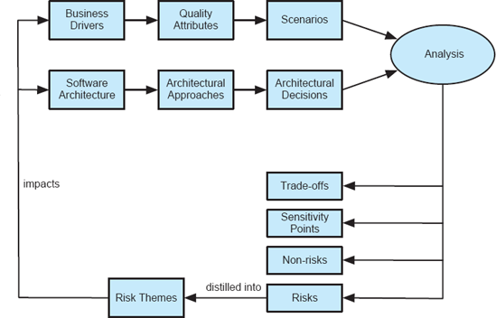
Figuras 8-12. A visão geral das etapas do processo seguidas no ATAM. O diagrama foi adotado do Instituto de Engenharia de Software da Carnegie Melon University.
ATAM
O Método de Análise de Compromisso Arquitetônico (Clements, Kazman e Klein 2002), ou ATAM, desenvolvido no Instituto de Engenharia de Software da Carnegie Melon, é um processo centrado no ser humano para identificar riscos em um projeto de software no início do ciclo de vida do desenvolvimento. O ATAM foca especificamente nos atributos de qualidade, ou propriedades não funcionais (NFPs), de modificabilidade, segurança, desempenho e confiabilidade. Seu objetivo é revelar não apenas o quão bem uma arquitetura satisfaz determinados objetivos de qualidade, mas também como esses objetivos se equilibram.
O processo ATAM requer a reunião dos arquitetos de software que projetaram o sistema, outros stakeholders importantes desse sistema e uma equipe independente separada de avaliação de arquitetura. Uma avaliação usando ATAM normalmente leva de três a quatro dias. O conjunto de atividades seguidas está representado nas Figuras 8-12.
Dois insumos chave no processo ATAM são os impulsionadores de negócios e a arquitetura de software do sistema. O tomador de decisão do projeto, que geralmente é o gerente ou cliente do projeto, primeiro apresenta os principais motores de negócios do sistema. Estes incluem:
Os atributos de qualidade tornam-se a base para obter um conjunto de cenários representativos que ajudarão a garantir a satisfação do sistema com esses atributos. Existem três categorias de cenários no ATAM.
Uma vez identificados os cenários, eles são priorizados em termos de importância pelos stakeholders do sistema.
Outro fio condutor de atividade no ATAM envolve os arquitetos do projeto apresentando as principais facetas da arquitetura. Isso inclui:
Uma abordagem arquitetônica em ATAM refere-se a qualquer conjunto de decisões de design arquitetônico tomadas para resolver o problema em questão. Abordagens arquitetônicas são tipicamente padrões e estilos arquitetônicos. As abordagens arquitetônicas são usadas para elaborar as decisões de design arquitetônico tomadas para o sistema.
O passo chave no ATAM é a análise das abordagens arquitetônicas no contexto dos cenários identificados, com o objetivo principal de estabelecer a relação entre as abordagens ou seja, decisões de design arquitetônico e os atributos de qualidade. A análise não é rigorosa, mas sim destinada a observar características gerais e grosseiras da arquitetura. Para isso, para cada abordagem arquitetônica, é formulado um conjunto de perguntas de análise específicas para os atributos de qualidade e a abordagem arquitetônica em consideração. Os arquitetos do sistema colaboram com a equipe de avaliação da ATAM para responder a essas questões. As respostas focam particularmente nos riscos conhecidos (fraquezas), não riscos (pontos fortes), pontos de sensibilidade e pontos de equilíbrio de qualidade da abordagem arquitetônica.
Dependendo das respostas dos arquitetos, qualquer uma das respostas pode ser usada como ponto de partida para análises adicionais. Por exemplo, vamos supor que um arquiteto não consiga responder perguntas sobre as prioridades de processamento de eventos de um determinado subsistema ou sobre a implantação geral do sistema ou seja, a alocação de componentes de software para nós de hardware, discutida mais detalhadamente emCapítulo 10. Nesse caso, não haverá sentido investir mais recursos para realizar análises rigorosas baseadas em modelos ou simulação, como a construção de redes de fila ou análise de desempenho monotônica por taxa.
Por fim, os riscos identificados na dada versão do ATAM são destilados em temas de risco e redirecionados aos inputs do ATAM da arquitetura de software e do driver de negócios. O objetivo é repetir o processo acima até que todos os principais riscos arquitetônicos sejam devidamente mitigados.
Independentemente de sua eficácia real, qualquer processo de análise arquitetônica baseado em inspeção e revisão, como o ATAM, sensibilizará as partes interessadas do sistema para os aspectos importantes de sua arquitetura. No caso do ATAM, devido ao seu foco e objetivos, bem como à participação prolongada dos stakeholders do sistema, ele tem um alto potencial de resultar em requisitos de atributos de qualidade esclarecidos para o sistema, uma base melhor documentada para decisões arquitetônicas, identificação de riscos no início do ciclo de vida e aumento da comunicação entre as partes interessadas.
ATAM: Resumo da Análise
|
Objetivos |
Completude |
|
|
Consistência |
|
|
Compatibilidade |
|
|
Exatidão |
|
Âmbito |
Nível de subsistema e sistema |
|
|
Intercâmbio de dados |
|
Preocupação |
Não funcional |
|
Modelos |
Informal |
|
|
Semiformal |
|
Tipo |
Orientado por cenários |
|
Nível de Automação |
Manual |
|
Partes interessadas |
Arquitetos |
|
|
Desenvolvedores |
|
|
Gestores |
|
|
Clientes |
Análise Baseada em Modelos
Técnicas de análise arquitetônica baseada em modelos dependem exclusivamente da descrição arquitetônica do sistema e manipulam essa descrição para descobrir propriedades da arquitetura. Técnicas baseadas em modelos envolvem ferramentas de análise de diferentes níveis de sofisticação. Essas ferramentas são frequentemente orientadas por arquitetos, que podem precisar interpretar os resultados da análise intermediária e orientar a ferramenta em análises posteriores.
Devido à sua natureza orientada por ferramentas, as técnicas baseadas em modelos são muito menos intensivas em humanos e, portanto, geralmente menos custosas do que inspeções e revisões. Por outro lado, eles só podem ser usados para estabelecer propriedades "rígidas" da arquitetura de um sistema, ou seja, aquelas propriedades que podem ser codificadas no modelo arquitetônico. Eles não conseguem explicar facilmente propriedades implícitas aquelas que um humano poderia facilmente inferir a partir das informações existentes e, portanto, escolhe não modelar explicitamente. Além disso, técnicas de análise orientada por modelos normalmente não podem avaliar aspectos "suaves", mas muito importantes, de uma arquitetura, como a intenção e a justificativa do projeto. Técnicas baseadas em modelos geralmente também focam em um único aspecto específico da arquitetura de um sistema, como correção sintática, liberdade de impasses, adesão a um determinado estilo, entre outros.
Outra preocupação com técnicas de análise orientada por modelos é sua escalabilidade: técnicas mais sofisticadas são necessárias para acompanhar um número muito grande de elementos e propriedades do sistema modelado. O compromisso usual encontrado em muitas ferramentas de análise estática, das quais as ferramentas de análise arquitetônica baseadas em modelos são uma instância, é entre escalabilidade, por um lado, e precisão ou confiança, por outro. Em outras palavras, arquitetos podem conseguir obter resultados de análise altamente precisos com alto grau de confiança nesses resultados para sistemas menores, mas teriam que sacrificar essa precisão e confiança para sistemas maiores. Por todas essas razões, os resultados das análises orientadas a modelos geralmente são parciais, e múltiplas técnicas desse tipo são usadas em conjunto em qualquer projeto de desenvolvimento de software orientado à arquitetura. Mesmo assim, a análise baseada em modelos geralmente não fornece todas as respostas necessárias para um arquiteto, e é acompanhada de técnicas das outras duas categorias inspeções, revisões e análise baseada em simulação.
Os objetivos das técnicas de análise arquitetônica baseada em modelos geralmente são consistência, compatibilidade e completude interna. Os objetivos também podem incluir certos aspectos de completude e correção externas. Lembre-se de que tanto a completude externa quanto a correção avaliam a adesão do modelo arquitetônico de um sistema aos requisitos e da implementação do sistema ao modelo arquitetônico. Certos aspectos da completude e correção externas, como a completude estrutural ou correção, podem ser estabelecidos a partir do modelo arquitetônico. Além disso, o resultado da técnica de análise pode ser a geração automática de implementação (parcial) do sistema a partir do modelo arquitetônico, o que garantiria completude externa e correção por construção. Se a análise envolver requisitos do sistema, então, até certo ponto, os requisitos precisarão ser formalizados.
O escopo da análise arquitetônica baseada em modelos pode abranger componentes e conectores individuais, suas composições em um subsistema específico ou em todo o sistema, bem como os dados trocados entre os componentes e conectores específicos ou, globalmente, por toda a arquitetura. Técnicas baseadas em modelos também podem tentar avaliar a conformidade do modelo com um modelo de nível superior do qual ele foi derivado. Técnicas de análise nessa categoria também podem tentar avaliar a semelhança da arquitetura com uma arquitetura existente com propriedades conhecidas. Isso pressupõe que ambas as arquiteturas são modeladas em uma das notações suportadas pela técnica de análise.
Da mesma forma, a preocupação específica da análise baseada em modelos pode variar. As técnicas podem focar nas propriedades estruturais, comportamentais ou de interação. Propriedades comportamentais e de interação podem ser difíceis de avaliar completamente usando apenas técnicas baseadas em modelos, e essas técnicas geralmente são combinadas com abordagens baseadas em simulação. Técnicas baseadas em modelos podem ser usadas para analisar propriedades não funcionais de uma arquitetura, mas geralmente exigem o uso de formalismos específicos.
Em termos dos tipos de modelos particularmente adequados a esse tipo de análise, a regra geral é que mais formalidade gera resultados mais significativos e precisos. Assim, por exemplo, uma especificação Rapide, como a mostrada na Figura 8-2, será muito mais suscetível de manipulação por uma ferramenta de análise do que um diagrama informal como o mostrado na Figura 8-1. Normalmente, os modelos arquitetônicos aos quais ferramentas de análise sofisticadas são aplicadas possuem sintaxe formalmente especificada, bem como semântica.
Por sua natureza, o tipo de análise para o qual as técnicas baseadas em modelos são bem adequadas é a análise estática. Essas técnicas são bem adequadas para avaliar propriedades como conectividade adequada, conformidade de tipos, análise de definição e uso de serviços arquitetônicos, conformidade de interface e comportamento entre componentes interagindo, adesão estrutural aos padrões arquitetônicos desejados, liberdade de bloqueios, entre outros.
Como já mencionado, no que diz respeito à automação, as técnicas baseadas em modelos são tipicamente pelo menos parcialmente automatizadas, e frequentemente totalmente automatizadas, não exigindo intervenção humana.
Por fim, as técnicas de análise de arquitetura orientada a modelos geralmente são direcionadas aos stakeholders técnicos, ou seja, arquitetos e desenvolvedores. Outros interessados podem se interessar por resumos dos resultados da análise, mas normalmente essas técnicas exigem certo grau de domínio e fornecem insights de baixo nível sobre a arquitetura.
O restante desta seção fará um panorama do espectro de técnicas de análise baseada em modelos desenvolvidas para diferentes linguagens de descrição de arquitetura e discutirá como modelos arquitetônicos podem ser aproveitados para possibilitar a análise de uma propriedade representativa não funcional a confiabilidade.
Verificação de Modelos
Uma técnica particular e amplamente utilizada de análise baseada em modelos em sistemas computacionais (tanto de software quanto de hardware) é a verificação de modelos. A verificação de modelos é um método para verificar algoritmicamente sistemas formais. Isso é alcançado verificando se o modelo derivado de um projeto de hardware ou software satisfaz uma especificação formal expressa como um conjunto de fórmulas lógicas. Diversas técnicas de verificação de modelos de software surgiram na última década; leitores interessados devem consultar uma pesquisa recente dessa área feita por Dwyer e colegas (Dwyer et al. 2007).
O modelo de um sistema geralmente é expresso como uma máquina de estados finitos, ou seja, um grafo direcionado composto por vértices e arestas. Um conjunto de proposições atômicas está associado a cada vértice, ou seja, estado. As arestas representam possíveis execuções que alteram o estado do sistema. Por fim, as proposições atômicas representam as propriedades que valem no ponto dado de execução.
O problema da verificação de modelos pode ser enunciado da seguinte forma: Dada uma propriedade desejada, expressa como uma fórmula lógica temporal p, e um modelo M com estado inicial s, decidem se o modelo satisfaz a fórmula lógica, ou formalmente
|
M, s |=p |
Se o modelo M for finito, a verificação de modelos é reduzida a uma busca em grafos. Infelizmente, isso raramente ocorre com sistemas de software, e o desafio crítico enfrentado pelas ferramentas de verificação de modelos é a explosão de estados, um crescimento exponencial no espaço de estados. Cada técnica de verificação de modelos deve abordar a explosão de estado para poder resolver problemas do mundo real.
Pesquisadores desenvolveram várias técnicas que podem ajudar a aliviar a explosão de estados, incluindo algoritmos simbólicos, redução por ordem parcial, diagramas de decisão binária e abstração de características de sistemas pouco interessantes ou não críticas. Outra estratégia para combater o crescimento exponencial no espaço de estados, adotada com sucesso pela técnica de Liga (Jackson 2002), é limitar explicitamente o tamanho do espaço de estados, garantindo assim a viabilidade da técnica. Claro, isso introduz imprecisão otimista no processo de análise: embora nenhum defeito possa ter sido encontrado durante a análise, não há garantia de que o modelo esteja realmente livre de defeitos.
Ao usar ferramentas de análise como verificadores de modelos, os arquitetos de um sistema de software terão que conciliar os riscos de defeitos críticos não descobertos contra as limitações práticas de aplicar um verificador de modelos em um modelo arquitetônico muito grande.
Análise Baseada em Modelos Viabilizada por ADLs
Os tipos de análises para os quais uma ADL é bem adequada dependem de seu modelo semântico subjacente e, em menor grau, de suas características de especificação. Por exemplo
Analisadores e compiladores de linguagem são outro tipo de ferramenta de análise. Analisadores analisadores analisam arquiteturas quanto à correção sintática, enquanto compiladores estabelecem a correção semântica. Todas as notações de modelagem de arquitetura usadas na prática possuem analisadores. Vários por exemplo, Darwin (Magee e Kramer 1996), MetaH e UniCon também possuem compiladores de algum tipo, que lhes permitem gerar sistemas executáveis a partir de descrições arquitetônicas, desde que implementações de componentes já existam. O compilador de Rapide gera simulações executáveis de arquiteturas Rapide (Luckham et al. 1995).
Outro aspecto da análise é a aplicação das restrições. Parsers e compiladores impõem restrições implícitas nas informações de tipos, atributos não funcionais, interfaces de componentes e conectores, e modelos semânticos. O Rapide também suporta especificação explícita de outros tipos de restrições e fornece meios para sua verificação e aplicação. Seu Verificador de Restrições analisa a conformidade de uma simulação Rapide com as restrições formais definidas na arquitetura. Uma ferramenta de verificação de restrições de arquitetura, Armani (Monroe 1998), baseada na ACME ADL (Garlan, Monroe e Wile 2000), permite especificação e aplicação de restrições arquitetônicas arbitrárias. O UML permite a especificação de restrições arquitetônicas em sua Linguagem de Restrições de Objetos, ou OCL, mas não aplica essas restrições nativamente; É necessário obter ou desenvolver suporte adicional para isso.
Linguagens como SADL (Moriconi, Qian e Riemenschneider 1995) e Rapide oferecem suporte para refinar uma arquitetura em múltiplos níveis de detalhes. A SADL exige provas manuais da correção dos mapeamentos de construções entre um estilo arquitetônico abstrato e um estilo arquitetônico mais concreto. Por exemplo, um estilo arquitetônico abstrato pode ser o estilo de fluxo de dados, um estilo mais concreto seria o estilo pipe-and-filter, e um estilo ainda mais concreto seria o estilo pipeline. A prova no SADL é realizada apenas uma vez; a partir daí, o SADL fornece uma ferramenta que verifica automaticamente se quaisquer duas arquiteturas descritas nos dois estilos seguem o mapeamento. O Rapide, por outro lado, suporta mapas de eventos entre arquiteturas individuais. Os mapas são compilados pelo Simulador de Rapide, para que seu Verificador de Restrições possa verificar se os eventos gerados durante a simulação da arquitetura concreta satisfazem as restrições da arquitetura abstrata.
Um resumo dos focos combinados de análise das diferentes ADLs é apresentado na tabela abaixo.
AVDs: Resumo da Análise
|
Objetivos |
Consistência |
|
|
Compatibilidade |
|
|
Completude (interna) |
|
Âmbito |
Nível de componente e conector |
|
|
Nível de subsistema e sistema |
|
|
Intercâmbio de dados |
|
|
Diferentes níveis de abstração |
|
|
Comparação de arquitetura |
|
Preocupação |
Estrutural |
|
|
Comportamental |
|
|
Interação |
|
|
Não funcional |
|
Modelos |
Semiformal |
|
|
Formal |
|
Tipo |
Estático |
|
Nível de Automação |
Parcialmente automatizado |
|
|
Automatizado |
|
Partes interessadas |
Arquitetos |
|
|
Desenvolvedores |
|
|
Gestores |
|
|
Clientes |
Análise de Confiabilidade
A confiabilidade de um sistema de software é a probabilidade de que o sistema execute sua funcionalidade pretendida dentro de limites de projeto especificados, sem falha. Uma falha é a ocorrência de uma saída incorreta como resultado de um valor de entrada recebido, em relação à especificação. Um erro é um erro mental cometido pelo projetista ou programador. Uma falha ou defeito é a manifestação desse erro no sistema. Em outras palavras, um defeito é uma condição anormal que pode causar redução ou perda da capacidade de um componente de realizar uma função exigida; é uma falha ou desvio de requisitos, design ou implementação em relação a um estado desejado ou pretendido.
Falha na definição acima indica que um determinado componente do sistema não está operacional. A confiabilidade pode ser avaliada usando várias métricas, tais como:
Modelagem, estimativa e análise da confiabilidade de software tem sido uma disciplina ativa por várias décadas. Durante a maior parte desse tempo, técnicas para análise de confiabilidade foram desenvolvidas e aplicadas no nível de artefatos de implementação do sistema. A razão é que vários parâmetros-chave do sistema são conhecidos durante ou após a implementação, incluindo o perfil operacional do sistema e possivelmente seu histórico de falhas e recuperação. Esses parâmetros são tipicamente usados na criação de um modelo baseado em estados do sistema, no qual as probabilidades de transições entre os estados são derivadas do perfil operacional do sistema e dos dados de falha. Depois, esse modelo é inserido em um modelo estocástico, como uma cadeia de Markov em tempo discreto, ou DTMC (Stewart 1994), que é resolvido usando técnicas padrão para determinar a confiabilidade do sistema em questão.
Engenheiros não precisam, e não devem, esperar para estimar a confiabilidade de um sistema até que ele seja implementado. Um modelo arquitetônico de software pode ser analisado quanto à confiabilidade de maneira semelhante à descrita acima. Ao mesmo tempo, existem várias fontes de incerteza inerentes a um modelo arquitetônico que devem ser abordadas:
Esses tipos de variação devem ser considerados na modelagem e análise de confiabilidade em nível de arquitetura. Como no caso dos sistemas implementados, pode-se construir um modelo baseado em estados correspondente à arquitetura. No entanto, certas informações, como o perfil operacional e as frequências de falhas do sistema, não podem ser obtidas, mas devem ser estimadas. Por essa razão, os valores de confiabilidade obtidos no nível da arquitetura não devem ser tratados como valores absolutos, mas sim qualificados pelas suposições, como o perfil operacional presumido, feitas sobre o sistema. Além disso, as incertezas inerentes ao modelo de confiabilidade em nível de arquitetura sugerem que pode ser mais significativo aproveitar modelos estocásticos diferentes dos DTMCs. Um desses modelos, especificamente destinado a lidar com incertezas de modelagem, é o modelo oculto de Markov, ou HMM (Rabiner 1989).
Aspectos da Análise de Confiabilidade
|
Objetivos |
Consistência |
|
|
Compatibilidade |
|
|
Exatidão |
|
Âmbito |
Nível de componente e conector |
|
|
Nível de subsistema e sistema |
|
Preocupação |
Não funcional |
|
Modelos |
Formal |
|
Tipo |
Estático |
|
|
Baseado em cenários |
|
Nível de Automação |
Parcialmente automatizado |
|
Partes interessadas |
Arquitetos |
|
|
Gestores |
|
|
Clientes |
|
|
Fornecedores |
Análise Baseada em Simulação
A simulação requer produzir um modelo dinâmico e executável de um determinado sistema, ou de uma parte do sistema que seja de particular interesse, possivelmente a partir de um modelo fonte que de outra forma não é executável. Por exemplo, o modelo do comportamento do componente QueueServer a partir deSeção 8.1, especificado em termos das condições pré e pós de suas operações, não é executável. Por outro lado, seu protocolo de interação deFigura 8-3pode ser simulado selecionando uma possível sequência de invocações de componentes, que também pode ser chamada de sequência de eventos do sistema. Essa sequência de eventos seria usada para executar a máquina de estados do protocolo de interação do QueueServer. Por exemplo, se assumirmos que o estado Vazio é o estado inicial na máquina de estados, as seguintes serão sequências válidas de eventos
<enfileir, enfileirar>
<cauda, cauda, cauda>
< fila, fila, fila, fila, fila>
enquanto a sequência de evento único
<fila>
é inválido, assim como qualquer sequência que comece com o evento de dequeue ou que tenha mais dequeue do que eventos de enfile. Note que a validade de uma sequência como
< fila, fila, fila>
não pode ser estabelecido sem introduzir informações adicionais sobre o sistema, ou seja, o tamanho da fila.
A simulação não precisa produzir resultados idênticos à execução do sistema: o modelo fonte, como um modelo arquitetônico, pode omitir muitos detalhes do sistema. Por exemplo, o modelo do componente QueueServer não diz nada sobre a frequência com que o componente será invocado, o tamanho dos elementos que serão colocados na fila, o tempo de processamento necessário para armazenar ou acessar e retornar os elementos da fila, e assim por diante. Por causa disso, o resultado da simulação pode ser observado apenas para sequências de eventos, tendências gerais ou intervalos de valores, em vez de resultados específicos. Note que a implementação de um sistema pode ser vista como um modelo executável muito fiel. Da mesma forma, executar esse modelo de implementação pode ser considerado uma simulação altamente precisa.
Claramente, nem todos os modelos arquitetônicos serão passíveis de simulação lembre-se como exemplo simples do modelo informal da Figura 8-1. Mesmo aqueles modelos arquitetônicos que são passíveis de simulação podem precisar ser complementados com um formalismo externo para viabilizar sua execução. Por exemplo, modelos de arquiteturas baseadas em eventos podem não fornecer geração, processamento e frequências de resposta de eventos. Para incluir essa informação, o modelo arquitetônico pode ser mapeado, por exemplo, para um formalismo de simulação de sistema de eventos discreto ou para uma rede de fila, com possíveis faixas dessas frequências especificadas e então simulado.
Claro, toda vez que informações adicionais, como frequência de eventos, são introduzidas, os arquitetos correm o risco de injetar imprecisão no modelo arquitetônico e, consequentemente, nos resultados da análise. Por outro lado, como a simulação é suportada por ferramentas, arquitetos podem fornecer muitos valores diferentes para os parâmetros do modelo, representando diferentes cenários possíveis de uso do sistema. Assim, obteriam resultados mais precisos do que seria possível com uma análise baseada em modelos tamanho único, e fariam isso de forma muito mais fácil e barata do que por meio de inspeções e revisões.
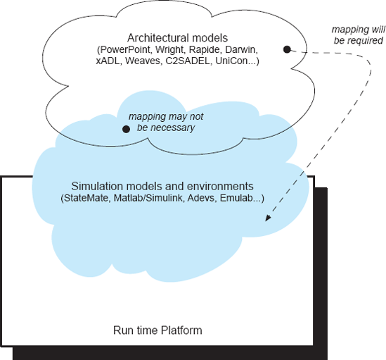
Figuras 8-13. A relação conceitual entre modelos arquitetônicos e de simulação.
Existem várias plataformas de simulação de software, e diferentes ADLs são discutidas emCapítulo 6e na seção anterior já os utilizou. A relação conceitual entre as ADLs e modelos e plataformas de simulação é retratada emFiguras 8-13: Certos modelos arquitetônicos (como os modelos baseados em transição de estados do UML ou os modelos baseados em eventos parcialmente ordenados do Rapide) podem ser simulados diretamente; outros modelos podem exigir um mapeamento para o substrato da simulação. O mapeamento necessário de um modelo arquitetônico para um modelo de simulação pode ser parcial ou completo e de vários graus de complexidade, dependendo da proximidade semântica entre a ADL e a plataforma de simulação. Por sua vez, a plataforma de simulação pode ser executada sobre uma plataforma específica em tempo de execução.
Os objetivos das técnicas de análise arquitetônica baseadas em simulação podem ser qualquer um dos quatro Cs: completude, consistência, compatibilidade e correção. No entanto, de forma semelhante aos testes de software, devido à natureza da simulação, essas propriedades só podem ser estabelecidas com um grau limitado de confiança e possivelmente apenas para um subsistema ou propriedade do sistema específico.
O escopo da análise arquitetrônica baseada em simulação geralmente é o sistema inteiro ou um subsistema específico, bem como o fluxo de dados no sistema. No entanto, é possível isolar componentes e conectores individuais e simular seus comportamentos também. Técnicas baseadas em simulação podem ser particularmente eficazes para avaliar a conformidade do modelo arquitetônico dado com um modelo de nível superior do qual ele foi derivado, bem como a semelhança do modelo com uma arquitetura existente com propriedades conhecidas. Como tais modelos, e portanto os resultados de suas simulações, podem ser esperados a diferir, pode ser necessário conhecimento adicional para determinar a relação exata entre os modelos arquitetônicos em consideração.
Como as técnicas de análise baseadas em simulação permitem "executar" uma arquitetura e observar o resultado, a preocupação com a análise baseada em simulação abrange comportamento, interação e propriedades não funcionais. Por exemplo, o arquiteto pode direcionar um conjunto de componentes na arquitetura para garantir que eles possam interagir da maneira desejada. Novamente, o grau de confiança dos arquitetos nos resultados da análise variará dependendo da quantidade de detalhes fornecidos no modelo arquitetônico. A confiança de um arquiteto nos resultados da simulação também dependerá do seu nível de confiança de que os cenários operacionais selecionados (ou seja, entradas do sistema) corresponderão ao uso eventual do sistema implementado. Como um exemplo muito simples, considere o componente QueueServer da Figura 8-3: Se o arquiteto pode ter certeza de que a primeira invocação do componente em seu ambiente de execução real nunca será para desenfilar um elemento, ele pode confiar nos resultados das simulações mesmo que elas não comecem com um evento de dequeue.
A análise baseada em simulação exige que os modelos arquitetônicos sejam formais. Modelos informais não podem ser mapeados para o substrato de simulação necessário, a menos que os arquitetos do sistema tomem muitas decisões de projeto improvisadas, possivelmente arbitrárias e incorretas, durante o mapeamento.
Os tipos de análise para os quais técnicas baseadas em simulação são adequadas são a dinâmica e, em particular, a análise baseada em cenários. Técnicas baseadas em simulação são bem adequadas para avaliar o comportamento em tempo de execução do sistema, características de interação e qualidades não funcionais. Se cenários de uso do sistema conhecidos forem postulados, os arquitetos não precisam mais se preocupar com a completude dos resultados da análise e se os resultados serão representativos do uso real do sistema.
Como já foi discutido, no que diz respeito à automação, as técnicas baseadas em simulação são tipicamente totalmente automatizadas, não exigindo intervenção humana além do fornecimento de entradas do sistema. No entanto, o processo de mapear um modelo arquitetônico para um modelo de simulação pode exigir envolvimento humano significativo. Isso, por sua vez, pode tornar o processo propenso a erros.
Por fim, técnicas de análise de arquitetura orientadas por simulação podem ser úteis para todos os stakeholders do sistema. A montagem e execução de simulações pode exigir um alto grau de expertise técnica e familiaridade com o modelo arquitetônico, a notação de modelagem da arquitetura, bem como o substrato da simulação.
XTEAM
A cadeia de ferramentas extensível para avaliação de modelos arquitetônicos (XTEAM) é um ambiente de descrição e simulação arquitetônica orientada por modelos para sistemas de software móveis e com recursos limitados (Edwards, Malek e Medvidović 2007). O XTEAM compõe duas AVDs existentes de uso geral, aprimorando-as para capturar recursos importantes dos sistemas móveis. Implementa geradores de modelos que aproveitam as extensões da ADL para produzir modelos de simulação.
Para modelar questões arquitetônicas, o XTEAM constrói um meta-modelo arquitetônico. Este meta-modelo aproveita o Núcleo do xADL, que, como o leitor lembrará deCapítulo 6, define estruturas arquitetônicas e tipos comuns à maioria das outras ADLs. Esse meta-modelo é complementado com processos de estado finito, ou FSP, que permitem a especificação dos comportamentos dos componentes (Magee e Kramer 2006). A combinação de xADL e FSP permite a criação de representações arquitetônicas que podem ser simuladas. O XTEAM mascara muitos dos detalhes das duas notações por meio de uma linguagem visual retratada emFiguras 8-14.
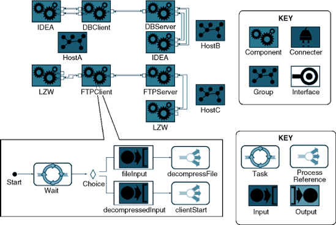
Figuras 8-14. Um exemplo de modelo XTEAM de um sistema composto por três hosts de hardware e oito componentes de software. O comportamento de um dos componentes foi destacado. Esse comportamento representa a sobreposição sintática do XTEAM sobre o FSP. O XTEAM permite que comportamentos sejam abstraídos na forma do construto ProcessReference.
Modelos conformes à ADL composta contêm informações suficientes para implementar um mapeamento semântico em construtos de simulação de baixo nível, que podem ser executados por um motor de simulação de eventos discretos pronto, como adevs (Nutaro). Esse mapeamento semântico é implementado pelo framework de interpretadores de modelos do XTEAM. Quando invocado por um arquiteto, o framework interpretador XTEAM percorre o modelo arquitetônico, construindo um modelo de simulação de eventos discretos no processo. A estrutura do interpretador mapeia componentes e conectores para construtos de eventos discretos, como modelos atômicos e dígrafos estáticos. As especificações comportamentais baseadas em FSP codificadas no XTEAM, como o modelo mostrado no diagrama inferior da Figura 8-14, são traduzidas nas funções de transição de estado empregadas pelo motor de simulação de eventos discretos. O framework do interpretador também cria entidades de eventos discretas que representam vários recursos do sistema, como threads. Os métodos de hook fornecidos pelo framework permitem que um arquiteto gere o código necessário para realizar uma grande variedade de análises dinâmicas.
O XTEAM implementa capacidades de análise baseada em simulação para latência de ponta a ponta, utilização de memória, confiabilidade dos componentes e consumo de energia. Cada tipo de análise requer a implementação das extensões ADL do XTEAM necessárias e um interpretador de modelo. Por exemplo, o XTEAM implementa a técnica de extensão e análise de modelagem de confiabilidade de componentes usando a abordagem baseada em HMM discutida emSeção 8.8.2. Essa abordagem de estimativa de confiabilidade baseia-se na definição dos tipos de falha dos componentes, nas probabilidades dessas falhas em diferentes momentos durante a execução dos componentes, e na probabilidade e tempo necessários para a recuperação após falhas. Para suportar esse tipo de análise, a linguagem de comportamento baseada em FSP do XTEAM teve que ser estendida para incluir eventos e probabilidades de falha e recuperação. O XTEAM foi então ampliado com uma técnica de análise que determina se e quando ocorrem falhas à medida que os componentes do sistema avançam por diferentes tarefas e estados.
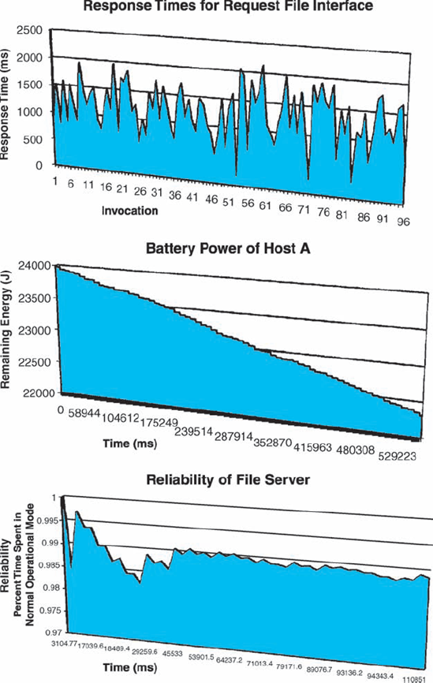
Figuras 8-15. Perfis de latência de ponta a ponta, consumo de energia e confiabilidade de diferentes elementos da arquitetura a partir da Figura 8-14, obtidos a partir de simulações adevs. As simulações eram geradas automaticamente a partir do modelo XTEAM.
Outra análise apoiada pelo XTEAM é a da taxa de consumo de energia do sistema móvel modelado. O modelo de consumo de energia selecionado por Seo (Seo, Malek e Medvidović 2007) foi implementado como outra extensão e interpretador de modelo ADL do XTEAM, que incorporou os elementos necessários do modelo de custo energético. Depois, outra simulação de desenvolvimento foi gerada pelo XTEAM para mostrar o provável consumo de energia do sistema ao longo do tempo, sob certas suposições de uso. Os resultados de três simulações diferentes para a arquitetura representada na Figura 8-14 são mostrados nas Figuras 8-15.
XTEAM: Resumo da Análise
|
Objetivos |
Consistência |
|
|
Compatibilidade |
|
|
Exatidão |
|
Âmbito |
Nível de componente e conector |
|
|
Nível de subsistema e sistema |
|
|
Intercâmbio de dados |
|
Preocupação |
Estrutural |
|
|
Comportamental |
|
|
Interação |
|
|
Não funcional |
|
Modelos |
Formal |
|
Tipo |
Dinâmico |
|
|
Baseado em cenários |
|
Nível de Automação |
Automatizado |
|
Partes interessadas |
Arquitetos |
|
|
Desenvolvedores |
|
|
Gestores |
|
|
Clientes |
|
|
Fornecedores |
ASSUNTO FINAL
Uma parte fundamental do que faz uma boa prática arquitetônica é decidir o que se quer da arquitetura. Um indivíduo ou organização não pode e não deve focar em arquitetura só porque é amplamente aceito que isso é o certo a se fazer. Em vez disso, os stakeholders do sistema devem primeiro decidir quais benefícios específicos desejam obter com o foco arquitetônico explícito. Um benefício claro disso é o estabelecimento das propriedades de interesse do sistema antes mesmo de ele ser implementado e implantado. É fundamental garantir que o sistema possua as principais propriedades necessárias e não tenha ou seja razoavelmente improvável que tenha características indesejáveis. A análise arquitetônica oferece aos stakeholders do sistema um conjunto poderoso de técnicas e ferramentas para isso.
No entanto, a análise arquitetônica não é nem fácil nem barata (veja a barra lateral "The Business Case"). Deve ser planejado e aplicado com cuidado. As partes interessadas do sistema devem ser claras sobre seus objetivos do projeto e devem mapear esses objetivos para análises arquitetônicas específicas. Este capítulo forneceu uma estrutura que pode ser usada para determinar as técnicas de análise arquitetônica mais adequadas para cenários específicos de desenvolvimento de sistemas. Em muitos casos, múltiplas técnicas de análise podem precisar ser usadas em conjunto. Novamente, decidir quais técnicas usar é uma parte crítica do trabalho do arquiteto: usar muitas técnicas vai gastar os recursos do projeto desnecessariamente; usar poucas opções correrá o risco de propagar defeitos para o sistema final; Usar análises erradas terá ambas essas desvantagens.
Uma vez que a arquitetura de um sistema está devidamente projetada e modelada, e se comprova por meio da análise que ele possui as propriedades desejadas, a arquitetura está pronta para ser implementada.Capítulo 9apresenta uma visão detalhada dos desafios, técnicas e ferramentas de implementação arquitetônica.Capítulo 10Em seguida, discute as implicações arquitetônicas de software na implantação e mobilidade em tempo de execução de um sistema implementado.Capítulo 14Retornaremos a essas questões no contexto da adaptação arquitetônica.
O Caso de Negócios
Os custos iniciais em um projeto de desenvolvimento de software orientado à arquitetura podem ser significativos. Mesmo que consideremos apenas a análise arquitetônica,
Claramente, a análise arquitetônica pode ser cara. Esses são os custos dos quais muitos gestores e organizações desconfiam, já que a receita planejada do sistema em desenvolvimento ainda está muito distante. Portanto, os custos devem ser compensados pelos benefícios obtidos com a análise arquitetônica. Os benefícios de detectar e remover defeitos do sistema de software desde cedo são bem conhecidos: muitas fontes, começando pelo trabalho seminal de Barry Boehm, Software Engineering Economics (Boehm 1981), documentaram que descobrir defeitos mais cedo do que depois pode reduzir o custo de mitigação desses defeitos em uma ordem de magnitude ou mais.
Isso não significa que todos os custos da análise arquitetônica sejam automaticamente justificados. Não há necessidade especial de fazer análise apenas para demonstrar que se pode fazer ou para mostrar uma técnica ou ferramenta. A análise deve ter um objetivo claro e ocorrer dentro de um contexto particular e bem definido. Em outras palavras, a atividade de análise realizada deve recuperar seus próprios custos por meio dos benefícios que gera. Ninguém deveria pagar mais por algo do que o valor que ela traz de volta. Por exemplo, os arquitetos de um sistema não devem gastar mais para realizar análises de deadlock do que o risco projetado e o custo associado ao deadlock para o sistema em questão. O ponto principal para qualquer projeto com orçamento apertado o que, na prática, significa para a grande maioria dos projetos é que, sob nenhuma circunstância, o custo da análise arquitetônica deve afetar a capacidade da organização de realmente implementar o sistema.
PERGUNTAS DE REVISÃO
EXERCÍCIOS
LEITURA ADICIONAL
Uma quantidade significativa de literatura sobre arquitetura de software tem se concentrado em análise baseada em arquitetura. Os primeiros trabalhos sobre ADLs, como Wright e Rapide, focaram tanto nas técnicas de análise habilitadas quanto nas características de modelagem. Da mesma forma, quando o UML surgiu pela primeira vez no cenário do desenvolvimento de software em meados e final dos anos 1990 como um padrão de modelagem de fato, foi quase imediatamente acompanhado por uma série contínua de publicações sobre como modelos UML podem ser analisados de forma eficaz para muitos tipos diferentes de propriedades de interesse. Uma visão geral amplamente citada das ADLs e suas capacidades de análise associadas foi fornecida por Medvidović e Taylor em 2000 (Medvidović e Taylor 2000). Esse trabalho foi recentemente revisitado e a perspectiva ampliada por Medvidović, Dashofy e Taylor (Medvidović, Dashofy e Taylor 2007).
O Instituto de Engenharia de Software da Universidade Carnegie Mellon propôs, ao longo do tempo, várias abordagens de análise arquitetônica que envolvem inspeções e revisões. Exemplos são o ATAM, estudado neste capítulo; seu precursor, Método de Análise de Arquitetura de Software (SAAM); e um método de avaliação para arquiteturas parciais, chamado ARID. Essas técnicas são descritas em um livro de Paul Clements, Rick Kazman e Mark Klein (Clements, Kazman e Klein 2002). Recentemente, Liliana Dobrica e Eila Niemelä apresentaram um levantamento mais amplo das abordagens de análise arquitetônica baseada em inspeção e revisão (Dobrica e Niemelä 2002).
Aproveitar modelos arquitetônicos explícitos para determinar as principais propriedades não funcionais de um sistema tem despertado muito interesse ao longo do tempo. Isso resultou em uma polinização cruzada de ideias de disciplinas já estabelecidas, como confiabilidade, confiabilidade e computação tolerante a falhas, por um lado, e arquitetura de software, por outro. Somente em 2007, Anne Immonen e Niemelä (Immonen e Niemelä 2007) forneceram um levantamento de métodos baseados em arquitetura para estimativa de disponibilidade e confiabilidade, enquanto Swapna Gokhale realizou uma pesquisa separada sobre abordagens de análise de confiabilidade baseadas em arquitetura (Gokhale 2007).